Society of Composers, Authors and Music Publishers of Canada, et al. v. Entertainment Software Association, et al.
This transcript was made with automated artificial intelligence models and its accuracy has not been verified. Review the original webcast here.
Justice Rowe (00:00:01): The Court.
Justice Wagner (00:00:09): Good morning.
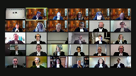
In the case of Society of Composers, Authors and Music Publishers of Canada against Entertainment Software Association et al. and between Music Canada against Entertainment Software Association et al.
for the appellant Society of Composers, Authors and Music Publishers of Canada, Casey M. Chisick, Dee Linwad, Matthew S. Easterbrooks and Eric Meisel.
For the appellant Music Canada, Barry B. Sukman, Danielle G.C. Glover and Connor Biltfeld.
For the intervener, Canadian Music Publishers Association, Caring on Business as Music Publishers Canada and Professional Music Publishers Association, Jessica Zegar.
For the respondents, Entertainment Software Association et al., Gerald Kerr-Wilson, Michael Short and Stacy Smidhu.
For the respondents, Apple Inc. et al., Julie Rosenthal and Michael Koch.
For the respondents, Pandora Media Inc., David W. Kent, Jonathan O’Hara.
For the intervener, Samuelson-Glasco Canadian Internet Policy and Public Interest Clinic, David Feuer.
For the interveners, Canadian Association of Law Libraries and Library Futures Institute, Kim Paula Nayer, Robert James QC.
For the intervener, Ariel Katz, Sana Alwani and Andrew Moser.
KC Chisick.
Speaker 1 (00:01:57): Good morning, Chief Justice.
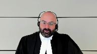
Good morning, members of the court.
I’ll be referring this morning to my condensed book, which I trust you have available.
On-demand services are everywhere.
Apple Music, YouTube, Spotify, Amazon Prime.
They’ve transformed the way we consume music and movies.
And they extract enormous value from the ability to offer huge catalogs of content on demand in a way that users can access whenever they want from wherever they are and in whatever format meets their needs at the time, whether that’s a download, a stream, or both.
And they do it all without ever having to worry about running out of product.
Now, the international community, including Canada, saw this change coming in the early 90s.
And it realized that without changes to traditional copyright law, online platforms, some licensed, some not, would capture all that value, and creators would be left out in the cold.
That led to the adoption of the WIPO internet treaties in 1996, which Canada signed in 1997, and Parliament finally implemented in 2012 through the Copyright Modernization Act.
And this appeal is about what Parliament achieved at that time by enacting subsection 2.4 sub 1.1 of the Copyright Act, which I’ll call the making available section.
Now, as Justice Binney said in Téberge, in crassly economic terms, it would be as inefficient to overcompensate artists and authors for their copyrights as it would be self-defeating to undercompensate them.
And this appeal is about preserving that balance in the online environment, as Parliament intended, by ensuring that creators, including the songwriters and publishers represented by SOCAN, share in the value realized when their works are made available on demand, and that they have the ability to enforce their rights against users and services who try to usurp that value by making works available without a license.
Thank you.
Justice Jamal (00:04:03): Could I ask you a factual question, given that you’ve spoken about streaming services?
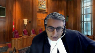
If a provider like Spotify, Apple Music, whatever, makes a library of music available, does it pay under an existing tariff, even if the music is never downloaded or streamed?
So if I have a library available of all the Beatles songs ever done, but I never actually play them, does Apple actually pay the tariff?
Overlapping speakers (00:04:33): Oh
Justice Jamal (00:04:34): Spotify, whoever, pay under a tariff existingly, even if the music is never downloaded or streamed.
Speaker 1 (00:04:41): Justice Jamal, it depends on the tariff and the structure of the tariff.
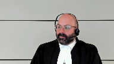
Currently, services pay under tariffs for the transmission of music, but there’s no value allocated to the act of making available.
And that’s exactly what the appeal is about, whether or not there’s a value allocable to the act of making available from which those services realize value, whether the copyright board is entitled to place a value on that for royalty purposes.
And if I can just offer a brief roadmap, Mr. Stucman and I will be splitting our time evenly this morning.
He’ll focus on the importance of the legislative context of the amendments, including the WIPO treaties, and I’ll focus on the text, context, and purpose of the making available section, including the decisions of this court in ESA, Rogers, and SODRAC, which I’ll address at the context stage.
But let me be clear.
In SOCAN’s submission, the text, context, and purpose of the amendment and purpose all lead to this conclusion.
The making available section expanded the existing communication right in section 3 sub 1 F of the Copyright Act in a technologically neutral way so that the act of making available on demand is a communication to the public by telecommunication, whether it’s later transmitted as a stream, as a download, or not at all.
So I ask you please to ignore the straw person advanced by the respondents because, to be clear, there’s no suggestion here that the making available section created a new freestanding right.
It’s an aspect of the communication right in 3 sub
1 F. Now, if I can just take a moment to show you what the act of making available is, and here I’d like to turn to tab 4 of my condensed book, where I’ve reproduced a flowchart that appeared in the materials that SOCAN put before the copyright board in the proceeding below.
And this demonstrates the copyright protected actions involved in a typical online music service.
On the extreme left, you have music files that are reproduced onto an internet-connected server, and when that server is configured in a way that gives the public on-demand access to its contents, that’s the act of making available, that’s what we’re talking about here.
The cloud-shaped icon that you see titled online music catalog, that’s the on-demand service, Spotify, Apple, Crave, so on.
It’s the online platform where these catalogs of music and movies are made available in a way that allows users to scroll, search, and, if they wish, select any given song or movie so as to gain access to it when they want it in whatever format they choose.
Or, in the piracy context, that’s the peer-to-peer file sharing site or the unauthorized service where users can share and access infringing content, again, as streams, downloads, or both.
If a work is accessed or pulled, as the technological term goes, at that time, the on-demand service initiates a transmission.
That may or may not ever happen, but if it does, the making available and the later transmission, if there is one, those are separate events that are carried out at completely different times.
And, as I’ll explain, it was that later transmission that was at issue in ESA and Rogers, not the initial act of making available.
Looking at that flowchart, you could think of it as ESA and Rogers considering the arrows on the right, whereas the appeal today is about the arrows on the left.
Now, this model is completely different from the way content was traditionally distributed.
No bricks-and-mortar store is open 24 hours a day, goes wherever its customers go, and provides instant access to an unlimited inventory.
Even Amazon.
So, I’m going to end here today, and I’ll see you in the next one.
Justice Côté (00:08:45): Mr. Chase, I’m sorry to interrupt you.
What should we do with the fact that if you write on the legal argument with the fact that the board was not able, notwithstanding the evidence in the other case, to put a value on that?
Speaker 1 (00:09:02): Well, Justice Cote, in our submission, that was very particular to the evidence that was before the board in that proceeding.
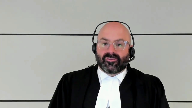
Regrettably, the board was not persuaded by the particular economic evidence that was offered either by SOCAN or by the objectors to that tariff, each of whom put forth its own theory of the value of the making available right.
The board wasn’t persuaded that that evidence was sufficient to put a value on the act of making available.
However, in the decision, the board also went to some length to say, in a future proceeding, it would benefit from having certain other evidence that would enable it to put a value on the right.
So, in other words, the board recognized that there is an act of making available that’s potentially compensable and that with the right evidence, with sufficient evidence of the economic value of that act, it would be able to put a value on that for royalty purposes.
It just wasn’t able to do that on the particular evidence that was supplied in that hearing.
Overlapping speakers (00:10:07): OK.
Speaker 1 (00:10:07): Now, let me turn to.
Justice Jamal (00:10:10): So if I can, just to go into your diagram, if I can just really, I’m just trying to visualize what’s going on here. Okay.
So if I can, just to go into your diagram, if I can just really, I’m just trying to visualize
Overlapping speakers (00:10:15): Yes, sir.
Justice Jamal (00:10:15): So if someone has access to the online music catalogue, you’re saying that there’s a value to the user, there’s an economic value or an aesthetic value and enjoyment value to the user, even if they never download or stream the music, for example.
For example,
Overlapping speakers (00:10:33): That’s what I’m trying to say.
Justice Jamal (00:10:34): That’s what, that’s, that’s the, and the point is, your argument is that there’s no other, that value isn’t otherwise captured in the downloading and streaming, in tariffs of downloading and streaming.
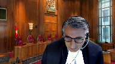
And that’s what this is dealing with is the value of the catalog that’s available on demand, even if it’s never downloaded and streamed.
Speaker 1 (00:10:54): important, Justice Jamal, to define our terms because when I talk about the value to the user in that case, I’m not necessarily talking about the value to the end user, to you or me, when we subscribe to those services.
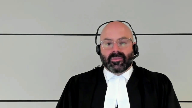
I’m talking about the value that the platform itself, these huge companies, Apple, Spotify, Google, obtain simply by being able to offer a catalog of the size and scope that they do on demand for users to be able to access when and how they want.
Justice Brown (00:11:28): You put a lot of value on size and scope and on 24-7 access and I’m wondering, because I’m looking at this from the standpoint of technological neutrality, obviously bricks and mortar store in the days of Blockbuster weren’t open 24-7, although close to it in some cases, they didn’t have the scope that they have, that obviously these servers have, but still they do make available just by putting on the shelf, in those cases movies for rent, so you say it’s technologically neutral, is that submission dependent upon the size and scale and the 24-7 availability of this?

Speaker 1 (00:12:18): Well, Justice Brown, I think it’s important to look at the language and the context of the provision to answer that question.
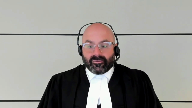
And our submission is that the making available section is technologically neutral in one way and not technologically neutral in another, and those are both by Parliament’s design, right?
In ESA, this Court said that the act is to be read in a technologically neutral way, absent evidence of parliamentary intent to the contrary.
And it’s clear that there are two ways of looking at technological neutrality.
On one hand, we see that the making available section is expressly not technologically neutral in the sense that on its plain text, it’s clear that it applies specifically and only to digital technologies because there’s no bricks-and-mortar way for a member of the public to access a work from a place and at a time individually chosen by that member of the public on demand.
So when my friends say that the SOCAN interpretation would treat on-demand services differently from a record store or a radio station, that may be true because that’s what Parliament intended, right?
And this Court made clear in SODRAC that technological neutrality can’t be used to displace the words that Parliament has used or override the expressed statutory terms of the act.
On the other hand, the making available section is technologically neutral in the sense that it applies equally to all forms of on-demand technology, so it doesn’t discriminate between streams and downloads.
And I say that for two reasons.
First, the provision itself is drafted in technologically neutral terms.
All it requires is that a work be made available for access by telecommunication.
And if you look at the definition of telecommunication in the act, you’ll see that it itself is defined in a neutral way.
It applies to any transmission.
And even the ESA decision at paragraph 28 confirmed that telecommunication includes both streams and downloads.
And we cover all this, by the way, for your notes at paragraphs 86 to 89 of our FACTA.
And the words to have access are also neutral.
They’re not limited to any type of access, whether it results in a copy or a stream.
Access is access.
And the second point I want to make on this is that, as I mentioned earlier, the making available section speaks only to the possibility of access.
It doesn’t require that any actual access take place.
So it follows that protection can’t depend on the form of any transmission that might follow.
That wouldn’t be workable.
Most services today provide access to works in the same copies of works as both streams and downloads.
And the board understood that.
It’s just not tenable for the legal characterization of the initial access of the initial act of making available to be determined by the person who accesses the work, not by the person who makes it available, particularly since the two are often separated.
Justice Kasirer (00:15:38): Oh, sorry, go ahead, Justice Kaskaris.
Justice Karakatsanis (00:15:42): To be clear, your position is that when you say it’s technologically neutral, you’re actually not referring to neutrality in the way we have traditionally done so, which is between traditional and technologically advanced forms of exercising these rights.
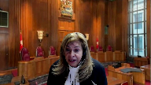
You’re using technologically neutral in saying it doesn’t matter which right is implicated, but it is a different way of talking about, it’s not the way we’ve talked about neutrality, technological neutrality in our jurisprudence.
You’re urging us to take a different interpretation of what that principle has always meant in our case.
Speaker 1 (00:16:26): Mr. Katsanis, that’s absolutely right.
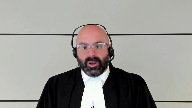
In our submission, there is clear evidence of parliamentary intent in this case that the making available section was not intended to be neutral as between traditional and on-demand technologies.
On its face, it applies only to on-demand technologies, and that’s clearly what parliament intended.
The neutrality of it is as between streams and downloads.
Justice Kasirer (00:16:52): Mr. Ciszek, just to follow up on my colleague’s question, is it that you’re arguing for two different conceptions of technological neutrality, or is one just not technological neutrality at all?
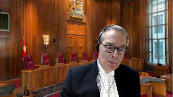
And I’m thinking of the criticism made by some of your friends that this is not technological neutrality in the sense of equivalent treatment of technologies when the underlying activity engages different rights.
That can’t be technological neutrality. Is it?
Speaker 1 (00:17:28): Well, again, Justice Kasser, the point is that technological neutrality only goes so far.
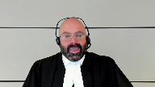
And in cases like this, where we have two completely different paradigms of distribution, one the traditional mode where a store is limited to a certain inventory with certain opening hours, a physical location and so on.
None of the hallmarks of on-demand distribution.
It’s simply artificial to compare that to the on-demand model with all of the attributes I described earlier and say, well, those must be treated exactly as if they were equal and equivalent for copyright purposes, because they’re not.
They are completely different business models.
And Parliament, again, recognized that by creating protection for the act of making available that applies only in the digital on-demand context, right?
That’s the submission here, the neutrality of.
Justice Rowe (00:18:35): But it just, it throws neutrality out the window, because it says that if I go to what’s traditionally been called a record store and buy a CD, the copyright holder gets a certain reward for that, but it’s one reward.
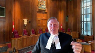
Whereas if instead of going and buying the CD, I say, well, I’m going to go on to one of the streaming services or which offers the download potential, so I download it.
I mean, other than the fact I have a physical CD, I have the same intellectual property.
But in the second instance, the copyright holder is rewarded twice.
That’s not neutrality.
Speaker 1 (00:19:26): Well, clearly Justice Roe, we’re talking again about different types of distribution, different types of acquisition of content.
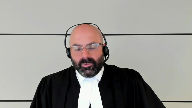
And Parliament here, maybe it would be helpful if we turn to tab five of my condensed book, where I’ve reproduced the actual language of section 2.4 sub 1.1.
Because again, in our submission, it’s abundantly clear that Parliament recognizing that very distinction, Justice Roe, that you just highlighted, decided, consistent with its obligations under the WIPO treaties, to create a unique form of protection for the act of making a work available on demand, right?
It expanded the communication right by deeming it to include an act which its ordinary meaning would not bear.
The act of allowing members of the public to have access to that work from a place and at a time individually chosen by them.
That’s simply not the paradigm that exists in the world of traditional physical distribution.
And so it was Parliament that decided that it needed to approach that in a way that recognized the unique distinction between those two.
It’s not technologically neutral because the acts themselves are fundamentally different as a qualitative matter.
Justice Rowe (00:20:58): Sorry. Carry on.
Carry on.
Well, Justin…
Hey, hey, hey, hey, hey, hey, hey, hey, hey, hey, hey, hey, hey, hey, hey, hey, hey, hey, hey, hey, hey, hey, hey, hey, hey, hey, hey, hey, hey, hey.
Justice Jamal (00:21:03): Sorry, go ahead. Go ahead.
Go ahead, please.
Justice Brown (00:21:09): I was just trying to close the loop with Justice Roe’s question.
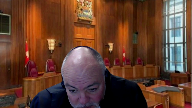
His point is it’s not technologically neutral.
You’re agreeing with him and you’re saying that it’s not technologically neutral because the language of Section 2.4.1.1 expressly contemplates that in the language of time and place and time individually chosen by the member of the public.
Do I have that submission in a natural?
Speaker 1 (00:21:35): Precisely right.
It’s not technologically neutral as between traditional and digital technologies.
It is technologically neutral as between all forms of on-demand communication, including both streams and downloads.
Justice Rowe (00:21:49): Yeah, but isn’t the other way to read 2.4.1.1 to simply clarify that point-to-point communication is a communication to the public, which needed clarification?
Speaker 1 (00:22:08): Well, Justice Roe, in our submission that point did not need clarification because it’s common ground that the decision of this court in Rogers and Sokan in 2012 made that point perfectly clear.
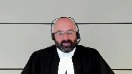
This court unanimously said that point to point communication in a way that allows the public to access those communications was an act of communication to the public.
But again, that focused on the transmission component of the stream.
That focused on what happens after the work is made available and that’s because the act of making available was not protected by the Copyright Act at the time.
This case looks at this additional act, this previous act of making available, which is newly protected as a result of the Copyright Modernization Act.
And it looks at that, it looks at that case separately.
The Rogers decision didn’t look at that because it didn’t exist at the time.
And so I would add, I would add to that simply that if that interpretation were correct, and my friends at the respondents suggest that it is, the outcome would be the Parliament will have legislated in vain, because it’s introduced this language to clarify something that was already the law according to this court in Rogers.
That’s known as codification.
Well, in our submission, this was something newly added as a result of the obligations that Parliament assumed under the WIPO Internet treaties.
It was not part of the law before because the act of making available that precedes a transmission was never before protected under the Copyright Act.
That was why the legislative amendments were needed.
Thank you.
Justice Brown (00:24:02): Is it helpful to consider that Rogers was looking at treaty language and therefore the 2.4, 1.1 was a necessary clarification to ensure that the substantially similar language in section 31F, substantially similar that is to the treaty language should be understood in the same way as it was understood in Rogers.
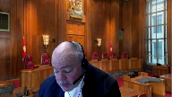
Speaker 1 (00:24:27): Well, thank you, Justice Brown, because I was just going to turn, if I may, to the decisions in the ESA and Rogers, because, you know, contrary to my friend’s submissions, this is not a case that begins and ends with the ESA and Rogers decisions, precisely for a number of reasons, including the one you just mentioned.
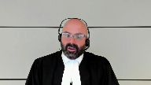
The questions in those cases were different from the question here, and even more importantly, the decisions turned on completely different legislative and treaty histories.
Mr. Sukhman will talk about the treaty issues further, but I want to turn, if I may, to my condensed book at tab, forgive me, at tab 14.
Sorry, I’ve just been interrupted again.
Justice Rowe (00:25:19): Has Rogers been, had the decision been rendered when this provision was adopted by Parliament?
Speaker 1 (00:25:26): It had not, Justice Roe.
The decision was rendered just a couple of weeks after the Copyright Modernization Act was passed, but before it came into force.
Overlapping speakers (00:25:36): There’s the answer!
Speaker 1 (00:25:37): The answer, the answer being that Parliament felt the need to act, I just want to make sure I’m understanding your question correctly.
Justice Rowe (00:25:47): You’ve said to us that in light of Rogers, what parliament then set out to do was futile because they already had the Rogers decision, but they didn’t have the Rogers decision.
Speaker 1 (00:26:00): But, but, but Justice Roe, the, the, the, the important point here again is to look at what was actually at issue in Rogers, and I’ve reproduced the extract starting at page 31 of my, of my condensed book toward the bottom, right.
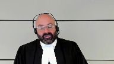
The court made clear in that case that the only issue in that appeal was the meaning of the phrase to the public, and in particular whether a stream was a communication to the public, even though it’s transmitted from point to point.
It did not look at the on-demand offering, the making available of it, it only looked at the transmission of the stream, the transmission component, which at the time was the only thing protected by section 3 sub 1F.
It was the, it was the Copyright Modernization Act and the making available section that introduced protection separately for the act of making available.
And, and it’s, it’s just simply important to, to point out as well that the, the, the, the court in, in ESA and in Rogers focused on how the fundamental nature of the communication right hadn’t changed in, in over 50 years.
That, that is different now, right.
Parliament has changed the fundamental nature of the communication right in our submission, so that it now includes the act of making a work available for on-demand access.
It’s, it’s, it’s entirely clear from the way the, from the way the act is framed.
And if you look at paragraph 56 of the Rogers decision, which appears on page 32 of my factum, of my condensed book, pardon me, the underlined, the underlined component makes that perfectly clear.
It says, in these circumstances, the transmission of any file containing a musical work, starting with the first, from the online services website to the customer’s computer at the customer’s request, constitutes communicating the work to the public by telecommunication.
There’s nothing in there, Justice Roe, about the initial act of making available.
The court was focused solely and entirely on the act of transmission that follows.
Justice Jamal (00:28:17): What do you say about the respondent’s argument that your interpretation relies on a definitional section to essentially expand the traditional categories of copyright beyond reproduction, performance and first publication in section three?
Speaker 1 (00:28:33): Well, Justice Jamal, in our submission, it’s really no different from the way the act has always worked.
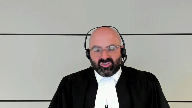
What the definitional section does in 2.4.1.1 is expand the scope of the so-called communication right in section 3 sub 1F so that it includes and applies to an act that it didn’t before.
It’s effectively a deeming provision that enlarges the scope of the right to communicate to the public in a way that the ordinary meaning of that language would not bear.
It’s no different from any of the other subsections in 3 sub 1 in the sense that it’s illustrative of acts that trigger those exclusive rights.
And, you know, it’s worth pointing out, by the way, as a matter of context that this is not the only time parliament has done that.
In section 2.4 of the Copyright Act, there are a number of different deeming provisions that change the meaning of communication to the public by telecommunication.
I won’t take you there, but I’ve reproduced those in tab 11 of my condensed book.
You know, in Sokan and Cape, this court referred to section 2.4 sub 1B as a deeming provision because it deemed an internet service provider not to be a communicator to the public for purposes of 3 sub 1.
There’s similar discussion of 2.4 sub 1A.
So, to Sokan, the fact that parliament chose to mirror the structure of the WIPO copyright treaty by expanding the communication right so that it applies to the act of making available, that was a provision that had exactly the substantive effect that it was intended to have to enlarge the scope of that exclusive right under section 3 sub 1F to apply to an act that its ordinary meaning otherwise would not support.
That’s a deeming provision.
Justice Karakatsanis (00:30:36): Oh, go ahead.
No, you go ahead.
Justice Moldaver (00:30:36): Oh, go ahead.
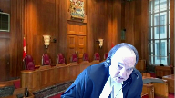
No, you go ahead.
Well, I just wanted, before you sit down, I just wanted your take on Justice Stratis’s take at paragraph 56 of his reasons.
I don’t know if you can have them available.
It’s at page 21 of his reasons, page 107 of the record, where he is talking about how from your side, you were looking to government statements to support your position.
And he sets out at paragraph 55 some of what you were looking at.
And then in paragraph 56 says, that’s not what it meant at all in terms of harmonizing this new legislation with the treaties.
Do you know what I’m talking about? Do you-
Speaker 1 (00:31:32): do, Justice Moldaver, and let me say in a very brief time that I have, we disagree with Justice Stratis.
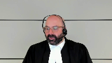
In fact, if you look at tab 17 of my condensed book, we’ve reproduced the explanatory memo on the WIPO copyright treaty that was tabled before the House of Commons when it came time to ratify that treaty in June 2013.
And it’s abundantly clear on the language of that section, both that it was Parliament’s intention to implement the WIPO treaties and what it understood that to mean in terms of Canada’s obligations.
It wanted the right to apply to unauthorized mass reproduction and distribution of materials online and it specifically described the act of making available as including, I’m here on paragraph 38, by the way, the ability to enable rights holders to control the transmission of copyrighted material via wire or wireless means or the release of that material on the internet.
And in our submission with respect to Justice Stratis, it just simply could not be clearer what Parliament set out to do and what, in fact, it accomplished.
Justice Wagner (00:32:50): Mr. Suckman.
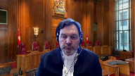
Mr. Suckman, are you there?
You’re on mute.
Speaker 2 (00:33:29): Thank you.
Can you hear me now, Chief Justice?
Overlapping speakers (00:33:31): Yes, loud and clear.
Thank you.
Speaker 2 (00:33:33): Fantastic.
Members of the Court, I’m going to focus on the importance of the legislative context of the amendments, including the WIPO treaties.
I also want to focus on how this context and the treaties bears on the decision in ESA, which members of the Court have asked about.
Justice Moldaver, you asked about Justice Stratis’ comment about whether the legislative history provides any guidance as to the interpretation of the amendments.
In my submission, when you look at the legislative history, including the statements made by Parliament, it’s clear that there is guidance provided.
At tab 4A of the condensed book, I have extracts from the legislative history that provide guidance as to Parliament’s intentions and which specifically indicate what Parliament intended by the amendments.
These are drawn from contemporaries publications of the government, the legislative summary in the bill, as well as the explanatory memorandum that the government put before Parliament in order to ratify the treaties.
Justice Rowe (00:34:53): The first document…
I let it go the first time when your friend said it, but parliament does not ratify treaties.
The executive does.
Speaker 2 (00:35:02): that that is true, but in order to ratify treaties the procedure Justice Roe is to lay before Parliament an explanatory memorandum and that’s what was put before Parliament and that’s one of the documents I’m going to advert to.
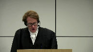
The first document under heading one is an extract from the explanatory memorandum and it makes clear beyond any adventure that Parliament intended the CMA to implement the WIPO treaties.
I don’t think anybody disagrees with that proposition but the importance of that
Justice Brown (00:35:40): I don’t think the legislation would state that.
You have sort of a reference in the preamble to the norms of the treaty.
Speaker 2 (00:35:48): Right, and it refers to the norms of the WIPO Treaty that were not then part of the law, the clear inference being that the government was going to harmonize the Copyright Act to the norms of the WIPO Treaties.
Justice Brown (00:36:04): Well, whatever the norms are, it would have been an easy matter to use the word terms of the WIPO treaty.
It could be the values of the WIPO treaty.
I mean, who knows?
It’s pretty fuzzy.
Speaker 2 (00:36:17): at the end of the day, Justice Brown.
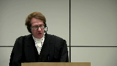
The key though, is that in accordance with this court’s jurisprudence on the presumption of conformance, including corn growers and HAPE, the primary source of interpretation of the communication right, including the MAR, must now be the WIPO treaties.
It’s no longer the Berne Convention, which was a relevant treaty when the communication right was construed in ESA.
Justice Moldaver (00:36:47): Well, that may well be, Mr. Suckman.
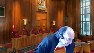
I just want to get your position on this.
Are you saying that what Justice Stratus says in paragraph 56, where he says really 2.411 is narrow, and I’d have a very limited purpose, clarifying that the unauthorized sharing of copyrighted material over peer-to-peer networks constitutes an infringement of copyright.
Are you saying that is inconsistent or contrary to these treaties that you’re talking about?
In other words, that it’s an interpretation that goes against those treaties, as opposed to furthering them?
Speaker 2 (00:37:26): that is absolutely right.
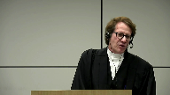
There is no question that one of the purposes of the WIPO treaties was to help rights holders combat peer-to-peer file sharing.
That’s clearly in all of the documents underlying the WIPO treaties, but that is not the sole purpose of the treaties.
In fact, the treaties require, and I’m going to get to this, I have it in the condensed book that-
I’m not sure.
Justice Moldaver (00:37:57): to interrupt and then I’m going to leave you alone.
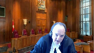
If it’s an interpretation that is in conformity with the treaties, then who’s to say what that Justice Stratis’ interpretation is wrong or cannot be accepted because it’s a much narrower one than you’re looking for?
Speaker 2 (00:38:16): That’s because Justice Stratus’ interpretation is inconsistent with what the WIPO treaties require and inconsistent with what the government said they were doing.
And I’m going to take you to that, Justice Moldaver.
Justice Brown (00:38:34): When you do, oh, I’m sorry.
Go ahead, Justice Cote.
I think it’s me.
Oh, I’m sorry, Justice.
Justice Martin (00:38:40): I just wanted to have you explain to us why the treaties require a making available to be a separate right as opposed, there’s some controversy about that underlying proposition.
Thank you.
Justice Brown (00:38:56): And I would just add to that because that’s my question as well and I would just say, do you read Rogers as understanding the treaties as requiring the creation of a new right as opposed to resolving an ambiguity in the law by clarifying that that on demand streaming pull technologies engage communication.
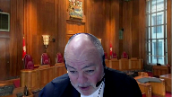
Speaker 2 (00:39:19): Thank you for the question Justices.
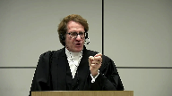
It’s clear in my submission that the treaties require both providing access on an on-demand basis which had not previously been covered and so that was something that was an expansion of the law.
The treaties also require that it doesn’t matter what type of material is made available whether it’s a stream or it’s a download and the treaties also require that if there’s any subsequent transmission of material but that is also covered by the making available right.
This was not all covered by the communication right certainly not as it was construed by this court.
It what did not cover simply providing access and it did not cover at that time the act was construed as distinguishing between performance and copy related materials.
The act did not was not construed in that manner and the act did not cover the transmission of downloads.
Rogers did decide that the transmission of material on an on-demand basis was covered and in the decision the court says that that’s something that the treaties clarified in relation to the Berne Convention.
Now it turns out under this court’s later decision in Rogers this court held that to be the case except it held that to be the case only with respect to streams not with respect to downloads and in my respectful submission the the right must apply to the communication of either streams or downloads on a demand basis.
Justices you asked the question about technological neutrality.
Justice Karakatsanis (00:41:37): Just before you move to technological neutrality, can you answer, can I come back to Justice Martin’s question?
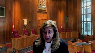
I mean, the respondents say that the experts say the treaties do not require the creation of a new making available right
and that there is flexibility in how these norms are implemented.
So I didn’t hear an answer to that question.
Speaker 2 (00:42:03): Thank you.
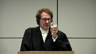
So the treaties have certain prescriptive requirements, which is what I just described.
Then there’s the question, how can a country implement the treaties in order to comply with them?
And under the evidence that was before the board, there were three pieces that were extremely important.
Number one, both Dr. Fixor and Professor Von Lewinsky, Dr. Von Lewinsky, made it clear that the reproduction right was never intended, never contemplated as being able to satisfy the transmission component because of the dynamic nature of the internet.
Secondly, if you look at the two WIPO guides in tab 16 of the condensed book, you will see that where the delegates who were fashioning the treaty talked about the possible implementation by other rights, you will see that WIPO itself says by other rights meant that the treaty could implement it either by an expansion of the communication right, so not a new exclusive communication right, but to be part of the existing communication right, which is what my submission Canada did and which is the European Union did and many other countries did.
Or it could be a standalone making available right, which is the case for sound recordings, or thirdly, a digital distribution right, not a reproduction right.
Then thirdly, in order to be able to comply with the treaties, the respondents admit that all of the necessarily attributes of the treaties have to be able to apply.
And in my respectful submission, when you look at the evidence and in particular, when you look at the evidence of Dr. Von Lewinsky, she makes it very clear why the reproduction right is not sufficient to comply because there are many cases where a work can make available without an infringing reproduction, including by the person who makes it available.
And secondly, the authorization right is not sufficient because it requires evidence.
So even if there’s a possibility that it could be implemented that way, it’s my submission clear and the board came to this conclusion as well that it would not be possible to implement it with only a performance-based communication right and a reproduction right.
Justice Brown (00:45:13): Was that a conclusion the board was entitled to draw?
And I guess this is my sort of direct way of asking, what do you think of Professor Katz’s arguments on the remit to the board here?
Speaker 2 (00:45:27): So I think it was certainly proper for the board to do that.

The board started with an interpretation of the act, context and purpose, came to its conclusion, then it confirmed its interpretation, and then it was dealing with the submissions of the respondents who said, well, Parliament didn’t necessarily intend to implement the right in that way.
And so it was perfectly proper.
As far as Professor Katz is concerned, Justice Brown, he objected to the procedure before the board.
He never did a judicial review.
The board is perfectly entitled, in my submission, to establish a separate proceeding, and it was not tied to Tariff 22A, that’s what initiated it, but the board was entitled to establish a separate proceeding.
And the discretion of the board as to procedural matters are matters which, in my submission, should be given deference.
If I could take you to…
Justice Rowe (00:46:38): I’m going to try to simplify this, which is very difficult for experts, because experts live in a world of great insight and detail and everything else, but I’m just going to give you the bumper sticker version, it seems to me.
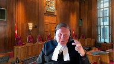
One way of reading what’s in the treaty is that signatories should ensure that copyright holders receive payment for the use of their works, and that you can’t get around it by various forms of piracy.
The other way, which you’re putting to us, is that the treaty required Canada to put in place a dual tariff mechanism, because there were two stages, each of which had to be compensated.
And I must say, I find it a great strain to take from the words of the legislation in the context of the treaty that this dual compensation regime was mandated, and then Parliament took that on board and said, yes, we are going to fulfill our international treaty commitments by doing this, as opposed to saying, we’re going to make sure that there is a regime in place in which there are no holes, there are no gaps, that every copyright holder will receive compensation versus two levels of compensation.
Speaker 2 (00:48:10): Thank you Justice Roe.
In fact the drafters of the treaties were not focused only on compensation.
Compensation was a clear purpose and when you look at the government statements, one of the purposes the government says that it implemented the treaties was in fact to ensure that new business models could be implemented as well as to fight online piracy and the legislative history of the WIPO treaties also shows that what they had in mind was to ensure that rights holders on the internet could control all the different ways in which rights could be released including using the rights as an enforcement mechanism and it’s clear when you look at what the government said that that was one of the rights.
It wasn’t only about tariffs.
I know that SOCAN places a lot of emphasis on this about tariff but the WIPO treaties are not all about tariffs.
They are about business models and compensation and they are very significantly as well dealing with the attempt to shut down online piracy.
You can see that from the extract which is at tab C of heading three and you can see when you look at that quote the government is describing what the making available right does.
It says all copyright holders will now have a making available right which is an exclusive right to control the release of copyright material on the internet.
This will further clarify that the unauthorized sharing of copyright material over peer-to-peer networks constitutes an infringement of copyright and they did that because the law prior to the enactment was unclear.
There were several cases that had left open the question about whether peer-to-peer file sharing was in fact covered by the authorization and reproduction right
and then if you look at extract D underneath it you’ll see the government defines the right as an exclusive right of copyright holders to authorize the communication of their work or other related subject matter in a manner in which the time and place of receiving the communication can be individually chosen by members of the public
and you see it says e.g. iTunes.
iTunes was an online Apple platform that was popular in the 2000s that offered music content for purchase via download.
It was similar to the video game download service considered in ESA which this court held was not covered by the communication right.
You can see what the government is saying but a download service would now be subject to the making available right.
In fact when you look at the glossary and the reference to peer-to-peer file sharing it makes it clear that parliament intended the making available right to be an exclusive right that also applied to downloads.
Justice says the requirements of the treaty are in my submission clear and you can see a description of them at tab seven and eight by Justice Ginsburg by Professor Ginsburg and Von Lewinsky and they make it clear that it had to have the attributes that I mentioned before making available and any transmissions of content if it should occur.
Justice Jamal (00:52:09): Could I ask you, given that you’ve given the example of iTunes, and the issue of the gap, would a streaming service or a provider, to take the example of Apple or iTunes or Apple Music, would they already be paying a fee under a tariff for reproduction by virtue of including that music in it?
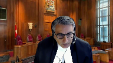
They may be.
Speaker 2 (00:52:36): And if there was, and they may be, but if they did, the board would have the discretion to look at the tariffs on an overall basis.
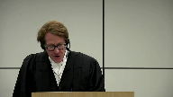
But the important point, Justice Jamal, is that this case is not only about tariffs.
In fact, there’s a case that I included in the compendium, a court of justice case called Netherlands, which responds to the argument that Pandora is making, that the MAR does not apply to merely making a work available, that the actionable right is only the transmission right.
And it rejects that, saying that the making available right must be an exclusive right that applies to downloads, whether or not they’re ever accessed.
Justices, I’d like to deal with the ESA case, because that’s the elephant in the room.
And I want to make two arguments with respect to ESA.
First, ESA and the principle of technological neutrality do not prevent the making available right amendments from being interpreted in a way that, because it provides, does not prevent it from providing an additional level of protection.
And I give you four reasons why that’s the case.
First, ESA was premised on a digital transmission of a work being a functional equivalent to an analog traditional way of delivering a work.
But in fact, traditional ways of distributing a work like in a store, do not cover the myriad different ways of releasing works on the internet.
For example, there is no analog functionality that’s equivalent to pirate sharing sites that can make millions of files that are infringing available.
Secondly, ESA was premised on an assessment that interpreting the act to add an additional layer of protection would be inefficient and would harm users and copyright owners.
Here, unlike in ESA, the legislative history, including tabs in, you’ll see in four, show that parliament made an assessment that the more would foster innovation, sustain new business models and would help artists being paid.
In other words, they were not concerned about a separate, about expanding the communication right to include the making available right.
Third, there’s overwhelming evidence here that parliament did not intend the principle of technological neutrality as that term was used in ESA to narrow the interpretation of the making available amendments.
Parliament intended, there’s overwhelming evidence that parliament intended the making available right to create a new technologically neutral right of making works available in order to ratify the treaties.
And Justice Carrick-Petanus, you asked the question about what was meant by technological neutrality.
And this court has used that term in different ways.
Here, I believe when parliament used it in the legislative summary, they are referring to media neutrality, which is reflected in section three, one of the Copyright Act, which describes the right to produce or reproduce a work.
They were using it in that sense, which is how this court used it in the Robertson case at paragraph 49.
And fourth, there are treaty concerns beyond those present in ESA in this case.
The WIPO treaty drafters were trying to solve a unique problem.
In ESA, which construed the Berne Convention, there was a clear dichotomy between copy and non-copy related rights, and no need for this court to find the communication right applied where there would be an overlap with the reproduction right.
But under the WIPO treaties, both rights must fully apply even if they were implicated in the same process.
And I’ve put at tab 13 of the condensed book, expert evidence from Dr. Levon Lewinsky that says, it would be a treaty violation not to give full effect to either the making available right or the reproduction right.
They’re intended under the treaties to both apply, even if there may be an overlap in a process.
So unlike in the ESA case, there’s a different treaty concern that did not exist in ESA.
Justice Kasirer (00:57:37): Mr. Sukhman, could you just on, could you address quite specifically the treatment of ESA that Justice Stratis provides in particular at paragraphs 65 and 66 of his where he says on any rational analysis ESA speaks to the authentic meaning of subsection 2.4.1.1 and constrained the board.
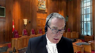
Speaker 2 (00:58:03): Justice is here.
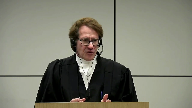
I wish I had two hours to talk about Justice, the Justice’s, Stratus’s opinion.
He did not review the evidence, at least from reading the decision, did not review the evidence before the board on any rational conclusion having regard to all the evidence before the board, which was extremely voluminous, including international renowned experts.
They completely disagreed with Justice Stratus and Justice Stratus’s interpretation gave no effect to the very extensive reasons of the board as to why the WIPO treaties required what they did and why that must have meant that the communication right was expanded.
Justice Karakatsanis (00:59:05): Mr. Suckman, I mean, we’re talking about statutory interpretation here.
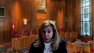
And so when you refer to evidence, you’re referring to what is the meaning of the treaty.
But don’t we have to interpret the legislation first?
And if it goes somewhere else, it really doesn’t matter what the evidence says about the treaty.
Speaker 2 (00:59:27): Well, thank you Justice Karras, that’s a terrific point.
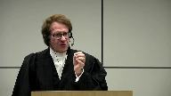
In fact, one of the ways in which Justice Stratis was completely wrong was how he approached the construction of the section.
Under the presumption of conformance, the starting point for the interpretation of legislation that implements a treaty is a treaty, and that the court should strive, unless it’s absolutely clear, to give a provision, the interpretation required by the treaty.
That is not what Justice Stratis said the presumption of conformance meant and not…
Justice Brown (01:00:14): In fairness, he doesn’t accept your starting premise that that 2.4 was intended to to implement a treaty. Right.
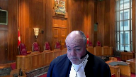
And, and, and, and 2.4 doesn’t purport to to wholly implement them it doesn’t even mention them.
The preamble to the amendments don’t purport to do so other
they just cite the norms of the treaty as a basis for the amendments.
It cites other values such as user rights and promoting innovation which which could be, I suppose read to to go the other way is weighing against the creation of new tariffs.
So, I mean, I guess in fairness, it’s just the, the, the, he doesn’t accept the premise.
If he would have accepted the premise then obviously he needs to look to the treaty, but
Speaker 2 (01:01:05): So Justice Brown, in my submission, Justice Stratis is completely wrong in that starting point.
In fact, when you look at the legislative history, and I’ve put some of it in the condensed book, but there’s a lot more to the legislative history.
It is clear that the reason Parliament enacted this making available provision, plus two other provisions to implement the making available right for sound recordings, that it was to implement the WIPO treaties.
The government said that over and over again.
And in my submission, it is crystal clear, and thus, the starting point for the interpretation must be the treaties, and the making available provision must be interpreted in accordance with the treaties.
Justice Rowe (01:01:59): Second point for the interpretation of legislation, what the legislation says.
Speaker 2 (01:02:05): According to this court’s jurisprudence on the presumption of conformance, including corn growers and HAPE and BO10, it is the treaty that parliament is implementing that is the starting point.
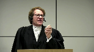
And that this court should, and that courts should only interpret a provision inconsistent with the treaty where it’s absolutely clear, but that’s what parliament intended.
And in fact, the evidence is that parliament intended to implement the treaty, not the converse.
Justice Rowe (01:02:44): What I said was you start with the text and then you look at the context, and the context includes the treaty obligation.
You don’t start with the treaty, you start with what parliament approved, do you not?
Justice Wagner (01:02:58): Just to follow up, Mr. Suckman, I’ll give you the chance to answer that question, but it’s another elephant in the room, the standard of review.
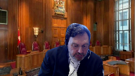
In your factum, you mentioned that it should be correctness because the legal question has a significant legal consequence for the justice system.
And it is because it’s an interpretation of an international treaty.
That’s why you come to the conclusion that it’s correctness.
But if you remove the aspect of international treaty, would you say still that the correctness standard is the right one?
Speaker 2 (01:03:37): Yes Chief Justice, it’s the right one for both reasons and in our factum we make the argument as to why it has to be correctness because of the institutional design of the Copyright Act.
The networks make the same point in their factum and we agree with that, that it’s correctness and that there was no intent to overrule the trilogy of Supreme Court of Canada cases that said standard review on questions of law from the Copyright Board should be correctness and then secondly with respect to international treaties in our submission that also should be correctness.
The compliance with the treaty obligation is something that’s of paramount importance to the legal system.
In fact, given this Court’s jurisprudence on the presumption of conformance as to why a law should be construed in order to comply with the treaty, that same rationale applies equally to the standard of review in terms of the policy questions.
Thank you, Mr. Zinab.
Justice Wagner (01:04:55): Can I ask perhaps a follow-up question, Chief Justice? Go ahead.
Justice Karakatsanis (01:04:59): Thank you.
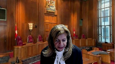
I’m just on the issue of standard of review.
What do you say, however, about Vavilov, which established a presumption of reasonableness that looked at all of our jurisprudence and came forward with the new framework, establishing reasonableness as the standard subject to five exceptions, which everyone agrees this does not fall within, in terms of the concurrent jurisdiction point, the Rogers point.
But, and Vavilov also goes on to say that we’re not, you know, we can’t possibly have considered any new circumstances.
So it may be that there is a new category in future, but based on the jurisprudence, our recent jurisprudence and our presumption of reasonableness, this is it for now.
I guess I just not mean, I can’t reconcile your position with paragraph 69 and 70 of Vavilov.
Speaker 2 (01:06:04): So, so thank you for thank you for that.
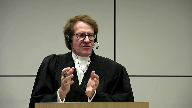
Justice, the, the, the court in Vavilov expressly left open institutional design questions, and the, and then that leads to the question as to whether the Copyright Act by institutional design.
I would prefer that the standard of review is is correctness.
Justice Karakatsanis (01:06:29): So we look at the context, the court also said, forget about context, we’re going to have a presumption of reasonableness, and then goes on to say it would be unrealistic to declare that we have contemplated every possible set of circumstance.
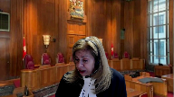
Well, this is a recent, these are recent decisions of the court.
Certainly, surely that was in contemplation and before the court in Fabulof.
Speaker 2 (01:06:54): So the one thing, in my respectful submission, that Justice Stratis did take a good look at was whether or not the standard of review should be correctness.
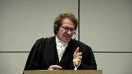
And he indicated that Valvulov left that open.
He provided reasons as to why it would still be arguable that the standard of review on questions of law should, in fact, be correctness.
And his reasons on that, in my submission, are correct.
And that’s probably the only thing in my submission I say he was correct on.
But that part, I do agree with.
And then when you add in the international component, where there can be extreme censure for not complying with the treaty and trade remedies, in my submission, that provides icing on the cake as to why the standard of review should be correctness.
And that’s probably the only thing I say he was correct on.
Justice Wagner (01:07:50): Thank you very much.
Thank you.
Miss Sligar.
Speaker 3 (01:07:59): Good morning.
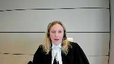
Visibility of copyright is an essential aspect of our copyright regime.
It’s what allows a copyright owner to divide and subdivide its rights to capture value and it’s what allows a user to only pay for value that it receives.
And it’s fundamental to this appeal.
This appeal is all about whether the making available provision creates a new protected activity that copyright owners can license and monetize.
Generally, the visibility of copyright recognizes that distinct activities that engage an exclusive right under the Copyright Act triggers distinct liability.
Even if those distinct activities take place within a sequence or process and even if those distinct activities trigger the same right.
The ability to divide and subdivide rights is confirmed by section 13 sub 4 of the Copyright Act.
It expressly allows copyright owners to assign or license a right in whole or in part.
This divisibility is critical to my client’s members and rights holders generally.
It’s what allows them, for example, to authorize a music streaming service to stream their music to individual users but not perform their music in public.
Because of the divisibility of copyright rights holders can elect to license that use separately in order to properly capture its value.
The respondents on this appeal threaten that divisibility by effectively asking the court to ignore a distinct and independent exercise of the communication right as expanded by the making available provision.
They do this despite generally acknowledging that the Copyright Act now captures activities that were previously not included in the statute.
That’s what the appellant CBC sought to do in CBC and SODRAC and the court wouldn’t allow it.
CBC wanted the court to ignore broadcast incidental copies being made in the broadcasting process in the name of technological neutrality because there were already other compensable reproductions being made.
If CBC had succeeded it would have undermined the divisibility of copyright and left my client’s members unable to control or monetize the making of those broadcast incidental copies.
Justice Brown (01:10:45): I wonder if the statutory text in 2.4.1.1 that uses the word includes, communication includes making it available, undermines your divisibility argument or at least its application.
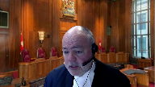
Here, I accept that rights can be divisible.
In other words, it doesn’t speak of it constituting a separate incident of communication.
It simply says that communication includes this.
It may also include other things.
Does that go anywhere?
Does that undermine your argument at all?
Speaker 3 (01:11:24): In my respectful submission, no, Justice Brown, because we know that a communication requires a sender and a receiver.
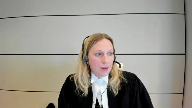
To be a communication to the public by telecommunication, as it was historically understood, to trigger the communication right, required a sender and receiver.
The making available provision doesn’t have that requirement.
And so we know that the making available provision is a distinct aspect of the communication right, because it’s not dependent on any subsequent transmission.
The act of making a work available on demand in itself triggers the communication right.
Justice Jamal (01:11:58): Why is there any free riding if the streaming services are already paying under a tariff for reproduction to include the music in its repertoire, whether or not it’s ultimately streamed or downloaded?
Speaker 3 (01:12:16): Thank you, Justice Jamal.
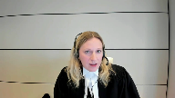
I think that touches on the issue of royalty stacking.
And we know from CBC and SODRAC that ESA cannot be read too broadly.
Technological neutrality isn’t offended by recognizing that distinct acts that trigger distinct rights triggers distinct liability.
We know that from CBC because we know that even a preparatory act from the moment the right is engaged, license fees will necessarily follow.
They don’t pay reproduction royalties if the work is never downloaded.
Justice Wagner (01:12:57): You have six seconds left, sorry.
I would ask you to conclude, please.
Speaker 3 (01:13:03): Okay.
The Protected Act of making available work on demand can’t be read out of the Copyright Act in the name of technological neutrality any more than the broadcast incidental copies in CDC.
And thank you.
Thank you for your time.
Justice Wagner (01:13:14): Thank you very much.
The court will take its morning break.
15 minutes.
Thank you.
Speaker 4 (01:13:22): The court. La Cour.
Justice Wagner (01:13:25): Thank you.
Mr. Kerr-Wilson?
Speaker 5 (01:13:32): Thank you very much, Mr. Chief Justice.
Good morning.
Good morning, justices.
I’m just going to give you a little road map of what we intend to do on our side of the virtual room.
So I’m going to deal with the issues related to statutory interpretation, including what to make of the treaty and how the treaty plays into the statutory interpretation exercise.
Ms. Rosenthal is going to look at the issue of whether rejecting the board’s interpretation creates potential gaps in Canada’s enforcement of copyright.
And finally, Mr. Kent is going to look at the issue related to royalties and value that are related to the making available provisions, so the money questions.
I was not planning to address the issue of standard of review because there was common ground among the parties that the review would be correctness.
I would just say quickly that from our point of view, we believe that a correctness review is justified under the Vavilov approach, which looked at the rule of law and requiring consistency and decision making.
So in Vavilov, they’re talking about two administrative bodies.
We would say the same rationale applies where you’re looking at a court versus the copyright board.
Parties should not be subject to different interpretations of the same provision.
But we agree that it’s correctness is the appropriate standard, and you don’t even have to create a new treaty exception, as suggested by Music Canada.
Turning now to the issue of statutory interpretation, and obviously we start with the overarching question, what did Parliament intend when it amended the Copyright Act to include 2.4.1.1, the making available provision?
Justice Brown (01:15:19): Well, without being too pedantic, it is, what is Parliament’s intent as discerned from the text and context?
Overlapping speakers (01:15:28): Agreed.
Justice Brown (01:15:29): Right. Yeah.
We don’t start with just, well, look at the look at the mammals and then go from there. No, no.
What are the words of the act in their context? Yes.
Speaker 5 (01:15:38): I completely agree.
Thank you, Justice Browne.
And I was pleased to hear Mr. Chizik on behalf of SOCAN say that they agree that there is no new making available right, so I thought we were on common ground that there is no new making available right.
I got less sure of Music Canada’s position when Mr. Suckman was making his submissions.
So I’m just going to very quickly, our position is there is no new exclusive making available right.
Parliament says in section two of the Act that we have at tab one of our condensed book that copyright means with respect to authors, the rights described in section three.
And if you look at section three, there is no mention of making available.
So whatever was intended by the provision, it’s not the creation of a new standalone making available right.
Justice Karakatsanis (01:16:30): Can I ask you to look at Section 2.3 and I know this was before there before the amendment but how did does that impact at all the interpretation of 2.4?
Overlapping speakers (01:16:45): Sorry, I’m going to have to get 2.3 up in front of me.
Justice Karakatsanis (01:16:48): A person who communicates a work or other subject matter to the public by telecommunication does not by that act alone perform it in public, nor by that act alone deemed to authorize its performance in public.
Speaker 5 (01:17:03): Right, so that wants to distinguish between parties who, for example, will use Spotify, that’s an example that people seem to be familiar with.
So Spotify would, could communicate musical works to a bar or restaurant.
The bar or restaurant could then perform those works in public by having Spotify playing over the speakers.
So that interpretation just makes it clear that Spotify, by supplying, by transmitting the music to the bar or restaurant, does not itself perform the work in public or authorize the performance in public.
That would be a separate act by the bar or restaurant.
Have I answered your question satisfactorily?
Not really, not really.
Justice Karakatsanis (01:17:53): I was wondering if it, well I suppose you have in the sense that it seems you don’t think it helps in the interpretation of 2.4 at all.
Speaker 5 (01:18:02): Well it does and we’ll get there we’re going to go back to 2.4 sort of the broader context
but I think it’s in terms of parliament having separate acts considered separately and treated separately in the act and not confusing things I do think it is helpful in that context
but we’ll get there when I get back to 2.4 if that’s okay.
So the question then is did parliament intend with 2.4 1.1 that all acts of making works available for whatever purpose should be deemed to be a communication to the public so that was the copyright board’s position and that is the position being advanced by our friends and we say that parliament could not have intended this result because it’s entirely inconsistent and incompatible with other provisions of the act and we can demonstrate this very easily.
So in terms of the board’s approach we agree with the federal court of appeal that the board started from the treaty and then derived an interpretation of the treaty that then was used to interpret the provisions of the act as opposed to starting with the act what are the words of the act and seeing how the treaty might be useful in understanding the words of the act. So
Overlapping speakers (01:19:23): You
Speaker 5 (01:19:23): And I’m going to go through it in the way that certainly we think the board should have approached the question.
So as we said, Parliament did not amend Section 3 to create a new making available right.
Instead it gave us 2.4 1.1 where it modified or provided us with some interpretation of the communication right that’s described in 3 sub 1 F.
And so first let’s look at the context of where Parliament included the provision.
And behind tab 5 of our condensed book, we have reproduced 2.4 and 2.3 actually the Justice Kyrgyzstan that you’re referring to is also on that page so we can go there.
So 2.4 with the subheading communications and public way telecommunication includes a number of provisions that help us to understand what’s included or how we understand the communication right that is granted under 3 1 F. So for example, it helps us understand that people who live in apartments are part of the public for the communication to the public or where one person transmits works to another person who then transmits them to the public.
We can understand that as a single act of communication where there’s joint and several liability.
And why it’s important that Parliament chose to include the making available provision in this is this is all about understanding public performances.
This is all related to the communication right as understood or as we understand it from this courts interpretation in ESA inextricably linked to public performances, long historical connection to public performances.
So our friends suggest well by putting this provision 2.4 1.1 Parliament told us they were breaking that long historical connection and now wanted to decouple the communication right from public performances.
But in our suggestion as a starting part of the exercise, they would then not have put the provision in an interpretive section that’s all about public performances.
They could have added a new definition of making available in section two that had nothing to do with communications and made it mean whatever they want.
So that’s the context of 2.4 1.1.
So now let’s look at the provision itself and break it down a little bit.
So first of all it says for the purposes of this act it is not limited to so-can royalties, it is not limited to provisions that are administered by the Copyright Board, 2.4 1.1 applies to every provision of the act.
Anywhere there’s some understanding of communications of public by telecommunication, this provision applies.
And that’s important because as we’ll see by not considering that this is where the board’s interpretation runs afoul of the broader context and structure of the act.
Secondly it starts with the communication of a work or other subject matter to the public by telecommunication and then adds on the step of making available, the preparatory step.
So the concept of communication of a work in 1.1 is the exact same language that was interpreted by this court in ESA as relating to public performances.
Remember yes in ESA this court said there’s really three rights, there’s a performance right, a reproduction right, and a right to publish and the list of paragraphs underneath are illustrative, they’re examples of these three primary rights.
And the communication right is an example of a public performance right.
So another way to read 2.4 1.1 consistent with that interpretation is that for the purposes of this act a public performance of a work includes making it available to the public by telecommunication.
There’s nothing in there that would lead you to the conclusion that suddenly reproductions are at play.
There’s nothing in 2.4 that deals with reproductions or modifying the reproduction right.
And we know that when Parliament chose the word includes they then were not attempting to change or modify the underlying definition of communication, they were simply adding to it.
So in this case what they’re adding is two things, one the fact that it includes making it available.
So it’s the preparatory step right, it’s putting it on the server, it’s putting it in a position where members can access it but the right engages before the transmission. So
Justice Brown (01:24:45): If that is so, then is a tariff payable at that point?
In other words, do you agree with Pandora’s submission on that point?
Speaker 5 (01:24:59): Yes, so and Mr. Kent will get into this more fully, but the copyright, the communication right engages now in effect at an earlier stage.
It’s still one right applying to one activity, the communication of the public, but that communication is now held to have started when the work is made available, whether or not it’s transmitted with that we do so if
Justice Brown (01:25:24): If I rent a video for streaming from a service that doesn’t require a subscription, like say I go on Rogers or Bell services or iTunes or something like that, would that business have to pay a tariff for simply making those works available, even if nobody ever does purchase them for streaming?
Speaker 5 (01:25:53): So there’s two questions, Justice Brown.
Is the right engaged and then if so, how is payment made?
And again, I don’t want to tell Mr. Kent’s field too much, but I’ll just say to address your question simply and he’ll pick it up.
The right is engaged when the work is made available.
When the payment is made and on what basis is a separate question.
So you could say we’re not going to demand payment for simply putting the work on the server, but every time it’s streamed, you owe us X amount.
OK, because.
Justice Brown (01:26:25): Because you say you agree with Pandora, maybe I’m misinterpreting what Pandora is saying, but my understanding is it says 2.4 1.1 expands the scope of 3.1 F such that a tariff is payable as soon as the work is made available for online streaming, even if it’s never streamed, because that’s when the work is communicated.
Speaker 5 (01:26:44): Yes, so we agree with that.
I was just saying as a matter of mechanics, the money may not actually change hands until the transmission actually occurs, but that’s a matter for the board to decide and the parties to decide.
Overlapping speakers (01:26:59): Okay, yeah, no, you’ve got limited time.
You don’t want to steal your colleague’s thunder.
Speaker 5 (01:27:06): But we agree, there’s no disagreement between ourselves and Pandora.
Justice Karakatsanis (01:27:12): Sorry, so you’re saying that there is a right that is engaged, whether or not it’s ultimately streamed.
Speaker 5 (01:27:21): Correct.
The communication right is engaged when the work is made available, whether or not it is ultimately transmitted.
Justice Karakatsanis (01:27:30): and a tariff will be required, but we won’t know when, but it could be at any time, even if it’s never transmitted.
Speaker 5 (01:27:40): really the obligation would arise and then the mechanics will depend on what the board decides but yes the obligation to clear the right through a license payment would arise at the earlier preparatory stage.
Overlapping speakers (01:27:55): whether or not it’s ever streamed.
Speaker 5 (01:27:58): Correct.
But when it is streamed, the right has already been exercised.
So there’s now not a second exercise of the same right.
The right engages at the earlier step.
And if there’s a transmission, the right has already been engaged, so nothing changes.
And if the right, if the work isn’t streamed, then the right’s already been engaged.
So the only question is, for purposes of payment, do you do something else?
Justice Côté (01:28:24): And that could be addressed by your colleague, because if it is never a stream, you do not deny and correct me if I’m wrong that the tariff may be payable.
Speaker 5 (01:28:35): Correct.
There could be a basis on which the tariff is payable even if it’s not streamed.
But again, I’ll leave that to Mr. Kent because he will see.
Justice Karakatsanis (01:28:42): But sorry, I’m just trying to understand that.
Then if it’s never streamed, it’s never performed.
So effectively you’re saying that there is a new communication right that arises even if it’s never performed.
Speaker 5 (01:28:58): I would express it a slightly different way, Justice Carr-Casanas.
The communication right, to the extent we agree with friends opposite, there is a deeming effect of 2.4, 1.1.
So it deems things that aren’t a public performance to be included in the public performance.
In this case, it’s the making available.
So there actually now is deemed to be a public performance even before the transmission occurs.
I wanted to look now though at why the board’s interpretation that all acts of making available should be understood as communications to the public.
And then we say this is incompatible with the act.
And to do that, if we could turn to page six, or tab six of our compendium.
And in there, we’ve reproduced section 2.2.1.
This is the definition of publication.
And this is a key element of the Copyright Act.
Publication to be published is one of the three primary rights.
So it says, for the purpose of this act, publication means, exhaustive list, this is the definition.
In relation to works, that’s what we’re talking about here.
Little i, making copies of a work available to the public is deemed to be publication.
But then if we go down, publication does not include communication to the public by telecommunication.
So in this case, Parliament says, if you make a copy of a work available, it’s published.
And if you communicate to the public by telecommunication, it’s not published.
Parliament has made a very clear and important distinction between the communication right and making available of a copy or a reproduction.
And we’ve listed at tab seven all of the examples where deciding whether a work is published or unpublished is actually material.
It goes to term of protection.
It goes to the sorts of rights that a owner might have.
So in our submission, Parliament could not have intended to create this very careful distinction between making available of a copy and communication in 2.21 and then completely eliminate that distinction in 2.4, 1.1 within the same section.
So to borrow words from this court’s decision in York University at paragraph 39, as a matter of legislative coherence, it would be incongruous for Parliament to create a distinction between making available a copy and then eliminate that distinction within the same section of the act.
And again, we’ve given you at tab seven examples why that actually matters.
The whole concept of publication becomes incoherent after that.
So then what do we do with the White Boat Treaty?
And I will say my friends, Mr. Kent and Ms. Rowland-Thaw, have graciously allowed me a couple extra minutes if I need to get through my submission.
So the Copyright Treaty, what I’m going to say is about this.
There is a lot of description and material in the record about the White Boat Copyright Treaty in Article 8.
There’s expert reports, there’s commentary, the board spends 15 pages looking at it.
But I think it is common ground that what was intended by Article 8 was a great deal of flexibility amongst the countries on how to implement the obligations.
The obligation describes activities and how the protection maps onto those could be a brand new, make it available right, it could be existing rights.
But the whole idea was to give the countries a great deal of flexibility.
And in fact, the copyright board itself said that looking at other countries’ approaches is not helpful or useful because there’s so much flexibility.
And Professor Rickardson in his expert evidence described six different approaches that a country could take, all which would comply with the treaty.
So I’m going to close on this point, but my submission is, Article 8 of the White Boat Copyright Treaty is intentionally ambiguous to provide flexibility.
So when you can look at it unambiguous treaty language to interpret ambiguous statutory language, what you cannot do is take an ambiguous treaty provision and use it to change the meaning of an unambiguous statutory provision.
And in our submissions, that is what the board did and that is what our friends are seeking to advance.
So subject to every question, those are my submissions.
Thank you.
Justice Wagner (01:33:54): Thank you very much, Ms. Rosenthal.
Speaker 6 (01:33:59): Good morning and thank you.
Is my sound working okay, first of all?
Overlapping speakers (01:34:05): Yes, very well. Thanks.
Thanks.
Speaker 6 (01:34:07): So I’m going to focus my submissions on addressing one particular argument that is advanced by the appellants with respect to what they say would be the result if you were to accept our statutory interpretation argument and and just to remind the court there really are two issues before the court today and my submissions focus on the first which is this does section 2.4 1.1 apply in situations where a work is made available online for downloading.
That’s where I will focus my submissions.
The second issue which is what Mr. Kent is going to focus on and which we’ve heard a fair bit of discussion on is does section 1.1 subsection 1.1 give rise to a separate right in respect of which royalties are payable and my submissions will not touch on that.
Justice Karakatsanis (01:35:04): Can I just ask you though, because I look at your, on that last point, I look at your factum at paragraph 91 where you appear to disagree with Pandora on that.
You say if a separate royalty from merely uploading a song were held to apply, it would be an absurd scenario of royalties being payable on songs that are never subsequently streamed or downloaded.
As a result, standalone uploading tariff would apply only to those works that are by definition so unpopular they’re never streamed.
That seems to be at odds with what you’re suggesting.
So if you could clarify your position, please.
Speaker 6 (01:35:42): Yes and I should clarify because our position is consistent with Pandora
and I would ask the court to to read our factum accordingly because I agree that that with Pandora that when a work is uploaded for the purposes of streaming the communication right engages at that moment.
Is that helpful?
Justice Brown (01:36:08): And of course the opening language of section 3 sub 1 doesn’t talk about a communication right, so do you say that this is an instance of the performance right?
Speaker 6 (01:36:18): So the opening language of 3-sub-1, correct, your correct, speaks of reproduction.
Overlapping speakers (01:36:26): performance in public.
Speaker 7 (01:36:27): And publication. Right.
Speaker 6 (01:36:27): Publication and publication and so the communication to the public right is an instance of the performance in public, right?
Even if nobody ever hears the performance, correct?
Justice Brown (01:36:37): Thanks for watching!
Justice Karakatsanis (01:36:37): Okay, okay, so we disregard 91, just to be clear.
Thank you.
Speaker 6 (01:36:44): So we argue that 2.4.1.1 does not apply to situations where our work is made available online for downloading purposes.
And in response to that, the appellants say, if you accept that aspect of our interpretation, the result will be gaps in the protection that Parliament intended to provide to authors.
And specifically, that Canada will be in breach of its treaty obligations to protect authors’ rights, the sole right to authorize the making available of their works online for on-demand access.
What we say is that even if you accept our argument, if you accept our argument that 1.1.1 does not apply to downloads, authors will still enjoy the sole right of making their works available online for download.
Now where do I say that right is granted if not in 2.4?
I say it is granted in the closing words of 3.1.
And just to remind the Court, 3.1, after enumerating the various activities in respect of which authors have the sole right, reproduction, performance in public, communication to the public by telecommunication, etc., 3.1 adds the words, and to authorize any such acts.
So with respect to how this right of authorization would provide the protection that the treaties require Canada to grant, I say this way.
If a person makes a work available online for download, a work available online for download, that person has necessarily authorized the download, i.e. the reproduction, of that work, and therefore that making available trenches on the exclusive right to authorize reproduction that is granted by virtue of 3.1.
And the same goes, of course, for a person who makes a work available online for streaming.
Same thing, that person has authorized the subsequent stream, i.e. has authorized the subsequent communication of the work to the public by telecommunication.
So what I say is there is no gap.
Justice Jamal (01:39:41): It isn’t-
Overlapping speakers (01:39:42): Then
Justice Jamal (01:39:42): argument a merger of the right only in instances where the music is enjoyed.
In the cases where the music is enjoyed through downloading or streaming there is a merger in effect of the making available and the downloading and the streaming, but not in the case where it’s simply made available and never downloaded or streamed.
Speaker 6 (01:40:05): I’m not certain about the work about the use of the word merger, but I think fundamentally I agree with that proposition.
Justice Jamal (01:40:19): and maybe Mr Kent is going to deal with this then, so how can the tariff be, how can a tariff be imposable in respect of the earlier making available in instances where it’s never downloaded and streamed?
Speaker 6 (01:40:35): I think I should leave that to Mr. Kent.
Justice Karakatsanis (01:40:42): but you’ll but you will explain why the authorizing the download and authorizing the performance concept means that the making available only applies to performances and not downloading sorry if i follow your logic it applies
Speaker 6 (01:41:01): to both.
I have not been clear.
What I say is 2.4 only applies to streaming.
And because I say the purpose and the effect of 2.4.1.1 was this.
Prior to its adoption, passage through parliament and royal assent, there was uncertainty in the law as to whether a single user, internet user sitting alone at home, who was accessing a work for streaming, whether that person constituted a member of the public.
In other words, the uncertainty was whether streamed works over the internet available on demand.
So where you have users who are not accessing all of the work simultaneously, whether that constituted a communication to the public.
And I say that was the purpose of 1.1.
And in fact, that was what Justice Rothstein explained in the Rogers decision, albeit he was focused on article eight of the treaty, but he used that precise language.
And he said this.
And this is at paragraph 48 of Rogers.
I apologize, it is not in my condensed book.
But Justice Rothstein said this with reference to article eight of the copyright treaty.
He said the core concept of making available can fairly be called neither a reaffirmation nor a novelty, for it resolves an ambiguity as to whether the old communication to the public right accommodated or excluded poll technologies.
So that’s what 2.4, 1.1 was designed chiefly to do, to clarify whether an on-demand poll stream was a communication to the public.
The other aspect that the appellants talk about is, well, who gets to control when works are made available online?
I say that part of things was covered by the authorization right in 3.1.
And the appellants further argument on this gap point, where they say, well, 3.1’s authorization language cannot fully protect authors.
And I believe Mr. Chizik used the language would leave authors out.
Justice Rowe (01:43:46): I’m afraid I’m gonna have to interrupt here because the level of sophistication and the nuance brought forward by counsel is perhaps exceeding my capacity to understand.
What I thought I heard you say a moment ago was that the provision in question clarified that streaming constituted a communication to the public.
And so I think I can grasp that
and I think it was the basis of the question which I posed to your friends previously.
Somehow that clarification now seems to have been transformed in a way that completely escapes me into an extension of one of the three rights set out in 3.1, if not a separate right which is compensable.
And that’s where you’ve lost me.
Liz, you seem to be making the argument for the appellant, frankly.
Speaker 6 (01:44:52): that is not what I intend to do.
But what my position with respect to the effect of 1.1 is simply, as I think you will hear from Mr. Kent and I think you have heard from Mr. Kerr-Wilson, is that the communication right engages earlier.
So that is part of 1.1.
And the other part is what I was just speaking about, which is that it clarifies the meaning of to the public.
Now, going back to the appellant’s argument about the gap, they say, well, the authorization right cannot fill this gap because whether something has been authorized depends on the facts.
And they say the mere fact of making a work available online for downloading or streaming might not constitute authorization of the ensuing download or stream.
And I say that is incorrect because what CCH tells us is that authorize means sanction, approve, or countenance.
And so if a person has made a work available online, has uploaded a work online, such that it can be downloaded or streamed, then I say that person has sanctioned, approved, or countenanced the ensuing download or stream.
Justice Kasirer (01:46:30): Sorry, I’m going to just ask the question that’s been asked of you again, Ms. Rosenthal.
So they upload it.
2.4.1.1 applies only to streaming, as you say.
What happens if nobody streams it?
If the goalposts have been moved back, the making available is when the communication kicks in, what happens when no one streams it? Is it…
Speaker 6 (01:47:04): If I could ask for clarification what happens with respect to the payment of a royalty or what happens with respect to the engagement of the communication, right?
Overlapping speakers (01:47:13): Well, let’s say both.
Why don’t you answer both?
Speaker 6 (01:47:16): So, what happens with respect to, I’ll start with a second, with respect to the engagement of the communication right, the communication right is engaged when the work is uploaded and made available for streaming.
With respect to the royalty payment obligation, again, I’m going to pair it what Mr. Kerr Wilson said, which is the timing of payment is largely going to be a matter of mechanics, but the right engages once the work is made available for streaming, because what that section says is the communication is deemed to begin at that moment.
Justice Karakatsanis (01:47:55): So I think, I’m sorry, I’m still struggling with this because if the communication right is a performance right, it only applies to streaming.
And in fact, there is a right is engaged when it’s uploaded, but never streamed.
Are you not effectively creating a right that’s different from a performance right.
It’s a, it’s a right to make available.
I’m having difficulty understanding how, how you’re, how you are submitting that this is not creating a new right.
But really calling it a communication right doesn’t get you to your position which is the communication right only applies to performances, to streaming, not downloads, because you seem to be saying that making it available, even if it’s never performed, is a new right that needs to be compensated.
And that’s why it’s called a right is at least engaged.
Speaker 6 (01:48:57): only if the work is made available for streaming.
That is the distinction.
That is the only time when the making available, that moment when it is uploaded and made available for streaming, that triggers the communication, right?
The making available of a work for downloading does not engage the communication, right?
Justice Karakatsanis (01:49:20): Well, I understand that’s your position.
I’m just having trouble following some of it, but I’ve asked you my questions.
Justice Kasirer (01:49:34): In a sense, it’s that it deems a performance to have taken place that may never take place, just to complete Justice Karakatsanis’ query, which I must say is something I’m stumbling over to.
Speaker 6 (01:49:49): I believe that to be correct, albeit only in situations where a performance is possible i.e. where the work can be streamed.
Justice Rowe (01:50:05): How does this differ from the appellant’s position?
Speaker 6 (01:50:09): because the appellants would say that 1.1 applies where the work is made available for download, in other words, where a performance is never possible, where the work cannot be streamed.
Overlapping speakers (01:50:23): And they also say there’s two separate tariffs, two separate instances, right?
Speaker 6 (01:50:29): Correct.
And the reason I say that distinction is important and that the distinction makes sense with the words of 1.1 is because of the we have to read those words in accordance with the scheme of the Act and as explained in ESA Parliament intended to distinguish between rights of reproduction on the one hand and rights of performance and communication to the public on the other hand and that distinction is fundamental to what ESA described as the structure of copyright and and that basic structure is wholly incompatible with how the appellants would interpret 2.4 1.1 their reading would transform an act that is all about reproduction and that can only end in a reproduction ie uploading for a download and the appellants reading would transform that into a communication and that’s why I say when you read 2.4 1.1 in its context and harmonious harmoniously with the scheme of the Act you see that it is solely concerned with acts that may ultimately result in a communication type activity ie in a stream and that it has no application to situations that may ultimately result in a reproduction type activity ie in a download
Justice Brown (01:52:10): does that also a go-ahead just
Justice Côté (01:52:12): Thank you.
So, I understand your argument, Ms. Rosenthal, as far as downloads are concerned, but as far as streams are concerned, I’m like Justice Roe, I’m trying to see how the position of the respondents is so different than the position of the appellant.
Speaker 6 (01:52:28): So I think the position of the respondents differs from the, sorry, the position of the appellants differs from the position of the respondents with respect to streams only in this, and that is with respect to whether 1.1 creates a new free standing right, although we may even agree on that, but regardless whether it creates a separate royalty right.
I think on streams that is the only area of disagreement between the two sides.
Justice Rowe (01:52:58): I might take it that you disavow the reason to the Federal Court of Appeal.
Speaker 6 (01:53:07): I don’t believe that my position is inconsistent with the reasons of Justice Stratus.
Justice Brown (01:53:15): Can I ask you what about where the end user has a choice between streaming or downloading the work in that event?
Is it your submission that depending on the choice a tariff may or may not be payable?
Speaker 6 (01:53:33): And in fact, the tariffs address those situations precisely.
So the tariffs will address the amounts payable in respect of works or apps in respect, I think they call them hybrid streams or limited downloads, and the tariffs assign different royalties payable in respect of these hybrid rights and ascribe a value to the reproduction activity, the download activity, and a value to the streaming or the communication activity.
Justice Karakatsanis (01:54:08): So, explain to me again why there isn’t a right engaged at the moment of streaming and a royalty payable, because you do disagree.
So, I’m going to ask you to explain to me why there isn’t a right engaged at the moment of streaming, and a royalty payable, because you do disagree.
Overlapping speakers (01:54:20): Thank you.
Justice Karakatsanis (01:54:20): the appellant that there’s two separate tariffs.
So explain to me again why.
Sorry, I do agree that they’re.
Speaker 6 (01:54:27): You
Overlapping speakers (01:54:27): Yeah, she says that.
Speaker 6 (01:54:29): I do agree that there’s two separate.
No, not two separate royalties.
That the moment of communication begins when the work is made available.
Justice Karakatsanis (01:54:41): but it’s so you’re saying when it’s actually streamed there isn’t a performance there or it’s
Justice Brown (01:54:50): Are you saying it’s all part of the same performance?
Speaker 6 (01:54:50): Are you saying it’s all part of the same performance? Correct.
The performance continues.
It is all one performance.
It begins when the work is made available and it carries on through any subsequent stream.
Justice Jamal (01:55:02): And you’re saying that’s it that’s important? Go ahead.
And you say that’s consistent with Article 8 of the WIPO Treaty because it also only speaks about communication?
Correct, thank you.
Justice Wagner (01:55:16): Thank you very much.
Overlapping speakers (01:55:17): Thank you.
Justice Wagner (01:55:17): Mr. Kent.
Speaker 4 (01:55:21): Thank you, Chief Justice justices.
To continue the, the agrarian reference my field is being walked around on a fair bit so I’m not going to try and find my old path but rather try and deal with some of the questions that have come up along the way.
But my issue, as was indicated before is to get back to the economics, and in particular this so called new rights and royalties issue, which in straight up economic terms reflects so cans effort to get a second or a stack royalty from streaming where it already gets paid today.
Since my client is only a streamer not a downloading service Pandora.
I’m going to come out all of this from a streaming perspective.
But there’s, there’s a fundamental scene setting that needs to be engaged in and this really picks up the very first question that was asked today by and it was by justice Jamal, but it picks up something just as consider asked as well.
It’s important to understand how making available and on demand services fit together in order to understand the broader economic implications of what’s going on here.
So here’s the simple or straightforward way to think about it.
First of all, by its terms, the making available provision only applies to works that are made available for on demand access.
And that’s not controversial but that’s just how the text reads
and that’s what the point is.
So that’s observation number one.
Observation number two is that an on demand service, whether it’s Netflix, or Spotify, or anyone else, and on demand service can only operate by making works available within the meaning of the provision.
In other words, you cannot have an on demand service like Netflix, unless you are performing an act which we now know is called making available within the meaning of 2.41 point one.
And so, this act of making available is in fact, the defining characteristic of operating an on demand service.
It’s intrinsic to it, and it’s necessary for it.
So that’s that’s scene setting set of observations number one.
And here is the adjacent scene setting step.
And that is that this act of making available by on demand services was going on before the provision was enacted by Parliament, and it’s going on after the provision was enacted by Parliament as I say it’s a defining characteristic, all apart from the Copyright Act.
And so, you have this activity, which is offering an on demand service, which is always included the act of making available offering a dynamic catalog of works from which you can choose or not choose
and I’ll come back to the not choosing.
And that is already being valued by the Copyright Board there are already tariffs in place for this activity, which is called offering an on demand service, which has always included the act of making available.
And these are the two contextual scene setting characteristics that I asked you to keep in mind as we talk about what it means to stack royalties to layer rights to ask to double dip.
Justice Karakatsanis (01:59:00): Can I ask you, you said they’ve already been valued by the board and they already have tariffs based on what right?
Overlapping speakers (01:59:07): Based on the, Justice Carcatenus, it’s based on the communication right.
Justice Karakatsanis (01:59:11): So even before this new provision came in there were tariffs based on the communication right for these services.
Speaker 4 (01:59:20): Absolutely, and so I’ll give you the example that would apply to my service or services like it.
The tariff that the board last implemented, and I sort of paused to say you may remember that the board did a bifurcated set of hearings.
It did the making available hearing and in parallel it did a rate setting hearing.
And that rate setting hearing, believe it or not, was in 2013 and it’s the last time they’ve done one, because…
Overlapping speakers (01:59:47): Mmm.
Speaker 4 (01:59:47): They’re a little behind.
It set a tariff for streaming services, and the tariff is 5.3% for an audio streaming service.
It’s 5.3% of revenues.
And so revenues are derived from subscribers.
Subscribers look at the service, and they say, yes, we’re willing to pay this much, and this many of us are willing to pay that.
And you take all that revenue, and Sokan gets 5.3% of that according to the tariff.
And I pause there and re-emphasize a point I was trying to tee up before with the contextual comment.
That revenue that people pay and on which the service remits a percentage, that revenue is based on how subscribers value the service.
But that doesn’t just mean how they value the stream.
It’s not about the technological quality of the stream alone.
It’s also how they value the overall service, which, as I say, always included making available a catalog of accessible works.
Nothing has changed.
Justice Wagner (02:00:53): Does that mean, Mr. Kent, that the amendment is useless insofar as you’re concerned?
Speaker 4 (02:01:00): Well, I’m going to come at this in two bites, but the two bites I hope will add up to an answer.
The first bite is that it changes.
It does not affect how one should understand the value of the service it has no impact on that whatsoever.
But, after all, you were taken to the various explanatory memos from this surrounded the implementation of the Copyright Modernization Act.
You don’t see anything in there about how the point of the of the bill was to add a second stream of royalties anywhere.
What you see is a lot of talk about piracy and protection and enforcement, which is a different issue altogether.
So, maybe there are my two bites it has no effect whatsoever on the valuation of rights, it does not create a new right, which is part of the building blocks to getting to where we are right now.
And you’ve already heard from my friends, Miss Rosenthal and Mr Kerr Wilson, about how what it seems to have been designed to do and I think actually Justice Roe made the same point.
It clarified the law on poll transmissions at a time pre Rogers, when the law was not very clear on that point.
And as I recall, and this by the way is not my part of the argument.
But as I recall the Rogers decision makes reference back to article eight of WIPO and notes the fact that it was trying to clarify what was then an ambiguity around poll technologies.
Justice Martin (02:02:34): I’ll interrupt to ask you this question, let’s assume for the purpose of argument that the appellant is right about this making available right
and does it necessarily then flow from that that there will be as you say a second additional or stack tariff or are there other possibilities that the board has to take into account.
Speaker 4 (02:03:05): So, Justice Martin, this answer also comes in two parts as so many answers.
The answer is sometimes yes and also no, but in this case it’s not really and here’s why.
So the not really part goes like this.
If the court decided that the appellants were right and that there’s somehow two rights now involved, that need not lead to a higher aggregate set of payments if the copyright board accepts the proposition that at that point it’s just about dividing the pie rather than making the pie a bigger thing.
So I make that observation that is clearly the position that we would take and it’s a position our economists have taken in previous hearings.
That said, it’s important to get the starting point right because I don’t want to be arguing uphill on that point.
I would rather be looking downhill from the high ground of there being only one right to start with and this is why there was this split between the copyright board and the federal court of appeal.
The copyright board says hey look there’s two rights here, they’re discrete and we’re going to value the new right so to speak separately and the federal court of appeal said no that’s totally wrong.
There’s one right, it may last longer so to speak but it’s still just one right.
So it’s still critically important to get the starting point for the board’s analysis right
and it’s important to do that here because the board, I said the board last thought about this in 2013, the board is next supposed to think about this in 2022 in October when the next rate hearing is coming up
and so it’s important that the board get guidance from the court about what is the right analytical starting point.
We know from previous cases ESA would be an example that this court has elected not to simply leave it to the board to get it right or wrong at the next hearing but in ESA the majority of this court said no it wasn’t going to let the copyright board smooth out the double dipping problem, the court would smooth it out for them thank you very much and that’s the position I’m advocating to the court today.
Justice Rowe (02:05:21): I’m wondering if it comes down, because I’ve been struggling ever since the respondents started to make their submissions, frankly, and I’m still struggling, but does it come down to this, the real difference between the appellants and the respondents?
One right giving rise to one tariff versus two rights giving rise to two tariffs.
Speaker 4 (02:05:47): Um well and and Justice Roe we’re obviously ignoring the whole does it apply to songs made available for download issue which isn’t my which isn’t my issue but so that’s another point of difference but let’s stick with what you asked um I I think that you have correctly described it
but it’s as I was saying to Justice Martin it’s a key distinction because it sets the starting point for the board’s economic analysis and so let me just pause and pick up something you asked there or use use what you asked as a springboard to say the next thing there’s been some suggestion that you could somehow think of making available uh in the abstract as a thing one might want to license I don’t mean part of a streaming service I just mean somehow in the abstract and that was offered up as maybe a way to think about why this should be treated as a separate thing
but of course you can’t make available in the abstract making available by its definition requires on-demand access to an immediate transmission and if you’re just say posting your catalog on the internet but not as part of a service you haven’t made a song available for immediate uh immediate transmission so this this whole idea of there being something discreet conceptually about the initial act of making available just doesn’t work from a from an interpretive perspective I totally agree that the commencement of the communication right has been moved up a step to the time the catalog is posted but that doesn’t mean you’ve created a second right
Justice Côté (02:07:30): So Mr. Kent, practically speaking, and I’m sorry if I did not understand properly, so you agree like Mr. Kerr-Wilson that the communication right is engaged earlier in the process, as soon as the work is made available.
But you also say in your outline of argument that it may be that the work is never streamed, but there will be something payable.
So as soon as the work is made available, you don’t know if it will be streamed or not.
It is made available for streaming, but you don’t know if it will be streamed.
How does it work for the payment of a tariff?
Speaker 4 (02:08:07): So, Justice Cotate, let me use the existing example.
A streaming service, according to the tariff, a streaming service like Spotify would pay 5.3% of its revenues to SOCAN.
That’s the answer to your question.
And then to be a little bit more full about it, that the revenue base on which SOCAN gets 5.3%, that includes that revenue base reflects all the value that consumers have placed on the service.
And that includes having a catalogue that you can choose from.
It also includes things like, well, if I go into the catalogue and I pick the first song, will it give me a really good suggestion for the second song I might like to hear if I enjoy the first song?
You know, it’s all those things.
That is what creates the value.
So when somebody pays 5.3% of their revenue, they are paying for the act of making available.
It’s by definition.
It’s just the formal copyright concept of communicating to the public by telecom didn’t used to be engaged at the making available step.
Now it is.
But the value hasn’t changed.
It’s already being paid for.
In other words, in other words, it’s already being paid for.
Justice Brown (02:09:19): they’re still paying the same amount, it’s just on account of a wider range of activity.
Speaker 4 (02:09:25): Well, from a copyright perspective, the notion of copyright now, think of it like a little tent, it now includes a slightly wider amount of activity.
But if you think about what a consumer is paying for, the consumer is paying for the totality of it, including things that are still not covered by copyright, like the ingenuity of the algorithms to pick songs that people might like based on what they’ve already indicated they liked.
So all of that is already being paid for, whether the copyright tent got a little wider or not.
Overlapping speakers (02:09:59): It doesn’t change, it doesn’t change, it doesn’t change in absolute terms the revenue stream, or at least it need not.
Exactly right.
Justice Jamal (02:10:06): Does this become a question then of the expert evidence that’s filed in respect of the earlier tariff that it automatically included a valuation of the value of the catalogue that’s available whether or not it’s streamed and that the economic evidence doesn’t just relate to what is streamed?
Speaker 4 (02:10:26): That’s right.
I mean, it’s very simple.
I mean, it’s not simple.
I say that a bit easily, but it’s not that hard to say.
The music, I’m talking about a music service now as opposed to a movie service.
The music contributes X percent of the value of the inputs that go into this service.
And therefore, music should be rewarded with that percentage, say, of the revenue that’s earned.
Well, that doesn’t change.
And by the way, there was a comment earlier, I think it was from Mr. Sukman, but I apologize if I got it wrong, to the effect that, well, it’s not the value to consumers that matters, it’s the value to the service.
That’s the copyright user.
As though the service has some intrinsic valuation that it places on the music apart from whatever the ultimate value is to its potential customers.
That’s just illogical and nonsensical.
Justice Karakatsanis (02:11:26): But can I come back to the Chief Justice’s question?
What I think your position is that the rights and the tariffs and the economic value has remained exactly the same and that this amendment, 2.4 amendment, makes absolutely no difference.
Overlapping speakers (02:11:46): No, I don’t say that.
Justice Karakatsanis (02:11:47): other than clarifies it.
Because I think what you’re saying is that this was all available, the right was engaged, a tariff was payable for these streaming services, whether or not they were ever streamed before the amendment and after the amendment.
And that’s, have I misunderstood your position?
Speaker 4 (02:12:08): A tiny bit.
And so I think it’s clear
and I think we’ve all been saying that the communication right is now engaged at an earlier stage in the process of offering an on demand service it’s engaged when you post your catalog rather than when you actually stream the songs.
Whether that has any economic significance is where I think you and I are agreeing with each other, or at least I’m agreeing with your characterization, which is, it doesn’t make any difference to the economic implications of offering that service to, to move the goalpost as somebody said, one step farther back, the only situation where you could imagine there being a difference in economic outcomes is if you had a service, and even as I say this you’re going to realize there is no such service.
But if you had a service that put up a catalog offered these songs for streaming, and nobody came.
And it never streamed anything and it generated zero revenue.
And then you might say, Oh, well, in the old days, it, you know, absent any transmissions there were no communications and therefore, they could get away with not paying anything.
But that’s you know that’s a nonsensical example because it just isn’t isn’t anybody’s reality.
So, yes, the economic effect for streaming for on demand streaming services is nil, because that to come back to the question the Chief Justice asked and I hope I answered that was not the point of this provision.
The point of this provision as I listened to Mr Suckman describe it was to offer enforcement tools to clarify the ambiguity that was previously around with respect to pull technologies.
Justice Moldaver (02:14:04): Can you just tell me, please, Mr. Kent, what was the board hung up on on step two of this whole proceeding?
I’m getting confused.
Is that in relation to the further position of the appellants that now reproduction rights are all included too?
I’m just mixed up here as to what it is that the board got hung up on, if in fact what you’re telling us is actually the case.
What caused the board to go off the track and come up and say, well, we can’t figure this out.
That’s all I’m getting at.
Speaker 4 (02:14:43): Yeah, well, the board, I’ll say they went off course in one place, and then I’ll just make the observation that better picks up your question. And it’s.
Yeah, so the board, certainly in the view of Justice Stratus went off piste when it came to understanding what the making available provision did by finding that it created a new right.
And that by finding that it should be separately compensable that’s where we say they went off piste conceptually
and that’s what we’re asking you to fix.
And then, as to what they got hung up on if I understand the question properly by presumably you mean by not then actually implementing and making available fee.
Is that sorry was that what you’re referring to by getting hung up.
Because in the end the board does not implement and making available feedback back in the old decision.
And it declined to do so.
Overlapping speakers (02:15:36): So the board got hung up on the fact that there’s two different rights now, is that the idea?
Yeah, that’s that’s where they went off track.
Speaker 4 (02:15:43): Okay, thank you.
And then they didn’t implement it because they didn’t like the evidence for either side.
I wasn’t involved in that at that point, but they didn’t like either side’s evidence, and so just declined to set a fee.
Justice Wagner (02:15:56): Thank you, Mr. Kent.
Your time is up.
Thank you very much, Mr. Fuhr.
Speaker 7 (02:16:13): Good morning, Chief Justice and justices, SIPC’s submissions this morning will focus on two aspects of our written submissions.
First on technological neutrality and second on efficient marketplace and administration of copyright.
On the first point, SIPC says that a technologically neutral reading of the making available provision shows that Parliament did not intend to create a distinct and compensable making available right.
Interpretation of the making available provision is an exercise in statutory interpretation and the principle of technological neutrality guides the interpretation of the Copyright Act.
As this court recognized in ESA as an interpretational principle, technological neutrality is grounded in the very objects of the Act itself in balancing creator and user interests.
A substantive approach to technological neutrality guides the court in interpreting the Act to find that absent express parliamentary signal otherwise, common activities should have common outcomes regardless of the technology involved.
The Act should not favor or discriminate any form of technology, again absent express parliamentary signal.
Applying those principles to this provision, Parliament signaled no departure in enacting section 2.4 sub 1.1.
As the materials of the respondents make evidently clear and our own materials go into, Parliament was at pains to signal otherwise in enacting making available provision, going so far as to include among the objects of C11 an explicit avowal to ensure that the Act remains technologically neutral.
The appellant Sokan acknowledges that its approach is a departure from this court’s traditional approach to technological neutrality.
Justice Brown (02:18:09): Well we’re kind of into the merits here which of course is a place we don’t like interveners going but since you’re there, your friend Mr. Chizik directs our attention to the statutory text referring to allowing a member of the public to have access to a work or other subject matter from a place and a time individually chosen by a member of the public.
Does that have any significance here in your view?
Speaker 7 (02:18:40): Thank you for the question, Mr. Justice Brown.
In our submission, the provisions that clarify exactly where this kind of activity has to fall within the Division of Rights in the Act.
All of the parties have gone through the three fundamental rights articulated in Section 3 sub 1.
We would say that Parliament’s identification of particular activity as belonging to the communication to the public branch of the performance rights, it sits squarely within that traditional Division of Rights within the Act.
And it communicates to the courts, to the Copyright Board, to the marketplace, how it should approach these kinds of activities from a regulatory perspective, from a permissions perspective.
Justice Brown (02:19:32): I’m sorry I didn’t understand that answer as responsive.
You’ve got limited time but there’s specific texts that we were directed to and the comparison was drawn between a brick and mortar shop and I guess whether you want to answer or not I just want to signal to you that that’s an issue in my mind.
Speaker 7 (02:19:50): Well, moving from a brick and mortar shop to the digital space, maybe the better transition is moving from a broadcaster, when you turn on the radio, to a digital context, where you turn on a streaming service.
What those words of the Act do is clarify that when a consumer selects to access a work at a time and place of its choosing, that that engages the communication right under the performance rights, and that’s how it should be administered from the perspective of the copyright board and courts dealing with liability questions.
Returning to the question of technological neutrality, we say that the court should reject an atomistic approach, a rigid approach to technological neutrality that severs an activity into several pieces, in particular, it severs an activity’s preparatory step from its execution.
This has the effect of disaggregating rights or fragmenting rights for the purposes of imposing an additional layer of liabilities, permissions, regulatory engagement, and ultimately royalties, and we say that this approach would impose significant policy concerns with respect to the efficient administration of copyright, innovation policy, and introducing marketplace uncertainty.
Thank you very much.
Justice Wagner (02:21:20): Thank you.
Speaker 8 (02:21:25): Good afternoon.
On behalf of Call-Asibe Day and Library Futures Institute, I wish to make two submissions using one illustration.
Our first submission is essentially one of legislative interpretation in the context of this Court’s prior jurisprudence.
This is that an overly expansive interpretation of subsection 2.4.1.1 is inconsistent with the legislative scheme and jurisprudence and that the Court should avoid such an interpretation or that this definitional subsection creates any new right, rather than clarifying the right of communication.
The second point is about the potential for adverse unintended consequences of an overly broad interpretation of subsection 2.4.1.1.
I will illustrate how the adoption of a broader rights approach, broader to rights approach, would adversely affect libraries’ innovative use of technology that lawfully makes information available to library users who do not have benefit of easy access to a physical library.
First, the Act creates a comprehensive balance system of rights for copyright holders and users, and it also lives in an international framework.
In interpreting the communication right in ESA and SOCAN 2012, this Court rejected a two rights in one activity approach, and it affirmed the principle of technological neutrality.
A reading that subsection 2.4.1.1 now creates or engages two rights is inconsistent with the wider scheme of the Act and its interpretation in ESA and SOCAN 2012.
There’s no evidence in the wording of subsection 2.4.1.1, the remainder of the Act, or even the values of the WIPO internet treaties, that any radical departure was intended.
It would be contrary to the modern principle of statutory interpretation or one single definitional amendment to effectively rewrite the legislative framework and create new obligations.
Instead, the approach that the definitional subsection 2.4.1.1 clarifies a new right, a single right, sorry, upholds the principle of technological neutrality, aligns with the creator user balance struck by the legislative scheme, and is consistent with the legislator’s words.
From the perspective of these interveners, this furthers the public interest in ensuring fair and equitable access to information.
Now, to the second point, to illustrate the unintended adverse consequences that can flow from an overly broad interpretation of making available in the context of libraries’ public interest activities.
The CCH and Law Society of Upper Canada case considered a practice called document delivery, where by library staff copy a portion of an item in the library’s collection and send it to a remotely located library user.
This court endorsed that right.
In CCH, document delivery was done by fax machine.
Document delivery by fax machine was a specific solution to a larger problem, how to make library materials available to people who are unable to reach the library.
The problem still exists, but technology has evolved the solution.
Nowadays, people use computers to access information, but technology has evolved the solution.
Nowadays, people use computers and the internet more than fax machines.
Libraries now make documents available by using software and a hyperlink, which the borrower can click to download a reproduction of the document.
Any outcome here that suggests document delivery, for example, now also engages a communication-related right and creates a new obligation simply because the library makes the same copy available by a hyperlink instead of with a fax machine, would render this court’s established jurisprudence and other sections of the Act immediately obsolete and would be contrary to the principle of technological neutrality.
And an interpretation that this way of making library materials available now also engages a new communication right would give the library another payment obligation to the copyright holder with each loan of material on top of the initial purchase of the material.
This important service would be rendered unsustainable, so would other lawful reproduction-based lending practices that are increasingly updated to carefully planned hyperlink-based technologically innovative modalities rather than paper and post or fax.
So to conclude, an expansive interpretation of one narrow definitional subsection that would result in a new right without any clear legislative record of this intent could have the unintended adverse consequence of curtailing established, endorsed and useful activities that advance equitable access to information.
Thank you very much for your time.
Justice Wagner (02:26:03): Thank you very much.
Speaker 9 (02:26:11): Thank you Chief Justice.
Good afternoon Justices.
I’m here today on behalf of Professor Ariel Katz.
I intend to address two brief points.
The first is that the board strayed from its core function of setting rates in coming to its decision on the making available provision.
And the second is that even if you decide that the making available provision creates a standalone right or an expanded right, it is not necessarily the case that an additional or separate tariff should follow.
I’ll turn to the first issue that the decision under review is the result of the board straying from its mandate of setting royalties.
We’ve also filed a compendium that provides some insight into procedural history.
I’m not going to walk you through it in my brief time
but it’s there if you need it.
The core mandate of the board and this everybody agrees with is to set appropriate tariffs.
Questions of general legal significance that go far beyond working out the details of an appropriate royalty are not part of that core mandate.
The board should only be making decisions and determinations of law if those determinations are necessary or inexorably linked to the tariff to be set and that’s to borrow language from the federal court of appeal and access copyright and ctv television.
Of course there are relevant legal questions that the board has to answer to determine whether a specific tariff is payable under specific circumstances but the board shouldn’t be determining the broader significance of any issue or provision it should stay in its lane.
A legal question justices cannot be both inexorably linked to the determination of a specific proposed tariff but at the same time determine an issue’s broader significance including for other tariffs and other rights holders which is precisely how the board framed the goal of the separate making available proceeding.
Justice Brown (02:28:02): What if a separate tariff is proposed to the board, right?
What if that’s actually proposed to the board?
Here, we’re seeking a tariff payable as distinct from the tariff payable upon streaming, upon actual streaming.
Doesn’t the board then have to consider, I mean, we’re not supposed to use the J word anymore, but let’s just call it whether it has the jurisdiction to actually classify, right, tariff and impose a schedule in respect of that?
Speaker 9 (02:28:33): Yes and you’ve just identified the two questions that the board should be asking itself which leads really into my next submission which is first is there a right or an expanded right or a new activity that’s covered but there’s a second question and that is if there is one should additional fees or an additional tariff however it wants to be structured should that follow and that isn’t necessarily the case and so here first so let me just close the loop on your first question which is should it could it answer that question it would have to
and it should do it in the context of the tariff proceeding where the economic evidence is before it to determine whether or not there is additional value you’ve heard a lot about value today there isn’t a record on value before you because you are reviewing a decision that had nothing to do with the actual setting of a tariff and so there are these two questions that are being in our submission merged by virtually everybody before you here today and the assumption being made is that if there is an expanded right or a new right if there is a different activity now covered that necessarily a new fee follows and that is absolutely not necessarily the case it’s possible that it is but it may not be if we go back to first principles justice brown tariffs are intended to emulate terms that arms length parties would enter into in a competitive market and that goal is even clearer if you look at the recent amendment to the act act at section 66 501 now in turn those terms are informed by the remedies that a party could get if they went to court and so let’s think about that the court doesn’t count up the number of torts and attribute damage it looks at the damage to a plaintiff and it sizes a remedy to that damage no matter the number of torts or the number of counts of a tort so even a standalone rate or an expanded right doesn’t require a separate payment it doesn’t answer the ultimate question that the board is designed to answer should additional payments be made and and so just to to conclude at this point in fact music canada actually acknowledges this in their reply at paragraph six that there are these two separate questions is there a right and does that right trigger new compensation so in our submission what we ask here is that if you determine even if you determine that there is a new right a standalone right an expanded right there are a lot of words that were used in the submissions today you should not prejudge whether or not that’s a tariffable activity and you should be intentional and decision on the on your on that point and you should if i may conclude very quickly tell the board to consider that second question separately as well does the right trigger new compensation and not assume that the inquiry ends if a right is determined to exist thank you
Justice Wagner (02:31:23): much.
Thank you.
Any reply, Mr. Chis…
Speaker 1 (02:31:30): Yes, Chief Justice.
Mr. Suttman and I each have a couple of points to make in reply.
I’ll be looking at my condensed book and I’ll start with this.
The respondents are all relying on the historical connection between communication and performance rights and yet it’s common ground that the act of making available is protected even if the work is never transmitted.
So as Justice Brown pointed out, it’s hard to draw a solid line between making available and performance if the work may never be transmitted and that exposes the limits of those historic relationships.
If you look at tab 15 of my condensed book, you see that the majority in ESA relied heavily on the historic relationship between communication and performance and the historic distinction between performance and reproduction to conclude that a transmission of a download was a reproduction and not a communication to the public and that’s what the respondents are asking the court to do today, limit making available to streams only and not downloads because of those same historic relationships.
But it’s critical to look at paragraph 38 of Rogers where the unanimous court said that historic relationships quote do not support reading into the act restrictions which are not apparent from and are even inconsistent with the neutral language of the act itself and in this case we say that’s exactly the case because the language of the making available section is neutral.
It does not distinguish between streams and downloads.
Justice Jamal (02:33:02): Could I ask you, Mr. Chizik, do you disagree with Mr. Kent’s proposition that the existing tariff for streaming, the 5.3% that he referred to, would include some value, some compensation for a repertoire that’s made available but that is never streamed?
Speaker 1 (02:33:22): I do disagree with that Justice Jamal because the court was the copyright board rather was very clear that it did not have the evidence available before it to value the act of making available and it declined to do so.
So this illustrates why the court needs to be very careful when looking at questions of valuation.
There’s more to it than meets the eye and what’s at issue here is the interpretation of the right.
I want to point out as well that at the time the making available section was introduced it was understood in Canadian law that downloads were covered by the communication right.
It was only later that this court released its decision in ESA and so that would have been the settled law that parliament understood when enacting the making available right or making available provision rather it would have understood that the communication right it was expanding applied equally to downloads and to streams.
And finally with two points.
First of all in response to Justice Kara-Katsanis we believe that section 2.3 does assist in the interpretation of the making available provision because it shows that the exclusive rights in section 3 are not categorized as rigidly as ESA suggests.
It’s hard to see how a communication to the public could be merely an illustration of public performance if it’s not itself a performance in public at all and that shows why there’s no reason there’s no reason that the expanded communication right can’t apply to the transmission of downloads the structure of the act doesn’t preclude that.
And finally on the question about ESA constraining the interpretation of the making available section simple point ESA didn’t consider that section it wasn’t in force.
Justice Stratis looked at the issue through the wrong end of the telescope by assuming that it was incumbent on the board to look at the at the at the meaning of communication without the very definition that was intended to give it color.
And I’ll pass Mr. Sukman.
Speaker 2 (02:35:21): Thank you.
I’d like to start off with Mr. Kent’s starting point.
His starting point is that this interpretation of these rights are really all about tariffs and in particular the tariffs of only one collective, so can.
But in fact the interpretation of the Act is not about the interpretation of one tariff and whether someone’s going to get paid once or more, it’s about the proper interpretation of what Parliament intended, including both the enforcement and the remuneration part.
On the question of publication,
Justice Rowe (02:35:58): Yeah, but obviously they’re related.
Two rights, two tariffs, one right, one tariff.
Ain’t it so?
Speaker 2 (02:36:06): A party that has a right is entitled to license it separately, whether it’s in one tariff or two.
That’s the attribute of an exclusive right.
In terms of publication, Parliament did put its mind to the publication issue when it amended Section 19.1 and 19.2 to expressly deem a publication for equitable remuneration by communication to the public.
But it didn’t change the section dealing with works, intending therefore to leave it so that making available physical copies would still be a way of making available.
And that conformed to Canada’s treaty obligation.
There is also no inconsistency with the structure of the act.
Nothing says that a right has to be only performance or only reproduction.
In fact, if you look at Section 3.1a and b, you’ll see that those are mixed in terms of both the reproduction and the performance right.
Overlapping speakers (02:37:17): on your time.
Your time is up.
So I will ask you to conclude, please.
Speaker 2 (02:37:22): Okay, so my last point in conclusion is that when this court has to construe this new right and has to consider the principle of technological neutrality, it is very important to understand that Parliament will be enacting in the future, just as it did with the Copyright Modernization Act, Internet age legislation.
In my submission, the principle of technological neutrality in ESA cannot always be tried to analogize back to an old analog-based right.
When Parliament signals, as it did here, that it was intending to enact legislation for the Internet age, that should be sufficient evidence to rebut the presumption that the doctrine of technological neutrality applies, and therefore should be given the meaning which Parliament intended.
Thank you.
Thank you, Justices.
Justice Wagner (02:38:20): So I’d like to thank you, all the attorneys for your submissions.
The court will take the case under advisement.
The court is adjourned until tomorrow morning at 10.30 Ottawa time.
Thank you for your time today, and I look forward to seeing you again tomorrow morning at 10 o’clock in the morning at 10 o’clock in the morning at 10 o’clock in the morning at 10 o’clock in the morning at 10 o’clock in the morning at 10 o’clock in the morning at 10 o’clock in the morning at 10 o’clock in the morning at 10 o’clock in the morning at 10 o’clock in the morning at 10 o’clock in the morning at 10 o’clock in the morning at 10 o’clock in the morning at 10 o’clock in the morning at 10 o’clock in the morning at 10 o’clock in the morning at 10 o’clock in